<!doctype html>
<html lang="en">
<head>
  <meta charset="utf-8">
  <meta name="viewport" content="width=device-width, initial-scale=1">
  <title>arxiv digest — 2026-08-29</title>
  <style>
:root {
  --bg: #ffffff;
  --fg: #1f2328;
  --muted: #59636e;
  --border: #d0d7de;
  --card: #f6f8fa;
  --link: #0969da;
}
body {
  max-width: 980px;
  margin: 0 auto;
  padding: 2rem 1rem 5rem;
  font-family: -apple-system, BlinkMacSystemFont, "Segoe UI", Helvetica, Arial, sans-serif;
  line-height: 1.55;
  color: var(--fg);
  background: var(--bg);
}
a { color: var(--link); }
img { max-width: 100%; height: auto; }
pre, code { background: var(--card); border-radius: 6px; }
pre { padding: 1rem; overflow-x: auto; }
blockquote { border-left: 4px solid var(--border); padding-left: 1rem; color: var(--muted); }
details { margin: 0.6rem 0; }
summary { cursor: pointer; font-weight: 600; }
.paper-figures-scroll {
  display: flex;
  gap: 1rem;
  overflow-x: auto;
  overscroll-behavior-x: contain;
  padding: 0.75rem 0.25rem 1rem;
  margin: 1rem 0 1.25rem;
  border-top: 1px solid var(--border);
  border-bottom: 1px solid var(--border);
  scroll-snap-type: x proximity;
}
.paper-figure-card {
  flex: 0 0 min(260px, 72vw);
  scroll-snap-align: start;
  background: var(--card);
  border: 1px solid var(--border);
  border-radius: 12px;
  padding: 0.55rem;
}
.paper-figure-card img {
  display: block;
  width: 100%;
  max-height: 240px;
  object-fit: contain;
  background: white;
  border-radius: 8px;
}
.paper-figure-caption {
  display: block;
  margin-top: 0.5rem;
  color: var(--muted);
  font-size: 0.85rem;
}
.figure-strip-hint {
  color: var(--muted);
  font-size: 0.9rem;
  margin-bottom: -0.3rem;
}
</style>
  <!-- MathJax: renders $...$ inline math and $$...$$ display math, plus
       \(...\) and \[...\]. Loaded from the official CDN; works offline
       once cached. Configured to skip code/pre blocks so arxiv IDs that
       look like dollar amounts don't get mangled. -->
  <script>
    window.MathJax = {
      tex: {
        inlineMath: [['$', '$'], ['\\(', '\\)']],
        displayMath: [['$$', '$$'], ['\\[', '\\]']],
        processEscapes: true,
        processEnvironments: true
      },
      options: {
        skipHtmlTags: ['script', 'noscript', 'style', 'textarea', 'pre', 'code'],
        ignoreHtmlClass: 'tex2jax_ignore',
        processHtmlClass: 'tex2jax_process'
      }
    };
  </script>
  <script id="MathJax-script" async
    src="https://cdn.jsdelivr.net/npm/mathjax@3/es5/tex-chtml.js"></script>
</head>
<body>
<header style="background-color: #333; color: white; padding: 15px; margin-bottom: 20px;">
  <h1 style="margin: 0; font-size: 24px;">
    <a href="https://ochelpan.github.io/arXiv_clean/" style="color: white; text-decoration: none;">Main</a>
  </h1>
</header>

<h1>Daily arXiv Report</h1>

<hr>
<p>
<a href="index.html">← Index</a>
 · <a href="papers_06.html">← Previous</a>
</p>
<hr>

<h2>Papers 121–139</h2>
<p><a id="paper-2608.27415"></a></p>
<h3 id="wedge-problems-and-dispersive-shock-waves-in-the-two-dimensional-toda-lattice"><a href="http://arxiv.org/abs/2608.27415v1">Wedge problems and dispersive shock waves in the two-dimensional Toda lattice</a></h3>
<p><strong>Authors:</strong> Marco Calabrese, Gino Biondini, Christopher Chong, Panayotis Kevrekidis<br>
<strong>Type:</strong> theory · <strong>Category:</strong> other · <strong>PDF:</strong> <a href="https://arxiv.org/pdf/2608.27415v1">https://arxiv.org/pdf/2608.27415v1</a><br>
<strong>Analysis basis:</strong> full PDF text, analyzed in chunks
<strong>Topic relevance:</strong> <code>Keldysh / 2PI / non-Gaussian methods</code> <strong>2/5</strong> · <code>analog quantum simulation</code> <strong>2/5</strong> · <code>methods for driven-dissipative</code> <strong>2/5</strong> · <code>Frenkel-Kontorova</code> <strong>1/5</strong> · <code>driven-dissipative phase transition</code> <strong>1/5</strong> · <code>non-equilibrium universality</code> <strong>1/5</strong></p>
<div class="figure-strip-hint">↔ Scroll figures horizontally</div>
<div class="paper-figures-scroll">
<figure class="paper-figure-card">
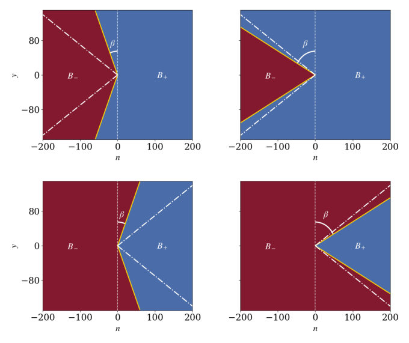
<figcaption class="paper-figure-caption"><b>Fig 1.</b> Figure 1: The four dynamical regimes of the wedge problem (1.5), with B−= 0.5 (dark red) and B+ = 0 (blue) as in the numerical simulations of Section 4. Top row: type I wedges, with q = 0.4 (subcritical, left) and q = 1.8 (supercritical, right). Bottom row: type II wedges, with q = −0.4 (subcritical, left) and q = −1.8 (supercritical, right). The gold line marks the wedge boundary at the slope q of each panel; the angle β formed with the y−axis which satisfies β = arctanq is indicated in each panel. The vertical dashed line marks n = 0. The white dash-dotted lines correspond to the critical slope |q| = qcr ≈1.429 from Eq. (4.10) separating the subcritical and supercritical regimes.</figcaption>
</figure>
<figure class="paper-figure-card">
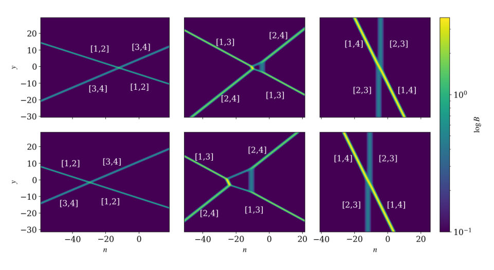
<figcaption class="paper-figure-caption"><b>Fig 2.</b> Figure 2: The three types of elastic two-soliton solutions of the 2DTL (index pairs as labeled), with phase parameters (P1,P2,P3,P4) = (−2.3,−0.69,0.69,2.71), as in [14]. Columns, from left to right: ordinary, resonant, and asymmetric interactions. Rows: earlier and later snapshots (top row: t = 4; bottom row: t = 10), illustrating the temporal evolution of each solution type. In the resonant interaction (center column), the pair of Y-junctions mediating the stem visibly separates further between the two snapshots.</figcaption>
</figure>
<figure class="paper-figure-card">
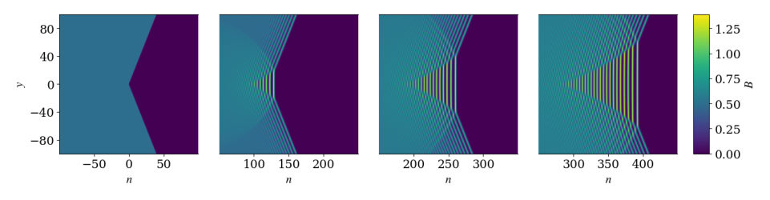
<figcaption class="paper-figure-caption"><b>Fig 3.</b> Figure 3: Density plots illustrating the evolution of a subcritical type II wedge with q = −0.4. The snapshots are at t = 0, 100, 200, 300. Note the formation of the vertical stem and its growth in y as time progresses.</figcaption>
</figure>
<figure class="paper-figure-card">
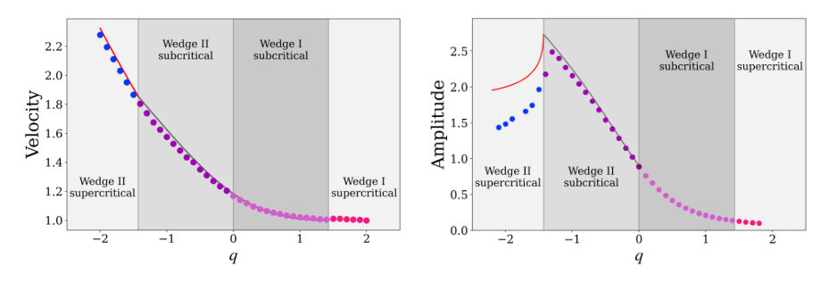
<figcaption class="paper-figure-caption"><b>Fig 4.</b> Figure 4: Left: Numerically measured horizontal velocity of the leading-edge as a function of q: cstem for subcritical type II wedges (purple dots) and subcritical type I wedges (pink dots) as a function of q (dots) compared to the theoretical prediction from (4.14) (solid gray curve); cpeak for supercritical type II wedges (blue dots) and supercritical type I wedges (magenta dots). Supercritical type II wedges are compared with the theoretical prediction from(4.18) (solid red curve). Right: Numerically measured maximum amplitude at y = 0 as a function of q for subcritical type II wedges (purple dots) and supercritical type II wedges (blue dots) compared with the theoretical prediction...</figcaption>
</figure>
<figure class="paper-figure-card">
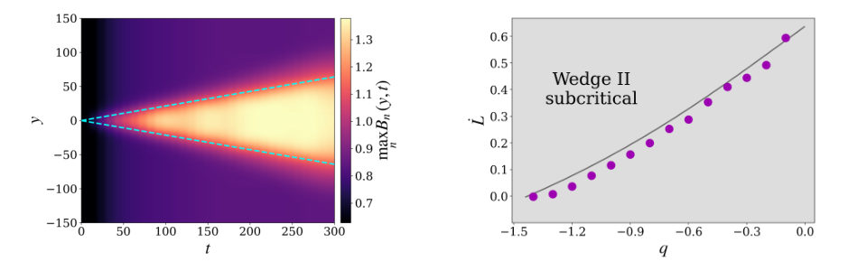
<figcaption class="paper-figure-caption"><b>Fig 5.</b> Figure 5: Left: Space-time density plot of maxn B(y,t) for the subcritical type II wedge with q = −0.4, smoothed via spline interpolation with Gaussian filters. The cyan dashed lines show the analytical predic- tion for the stem y±(t) from equations (4.12a) and (4.13a). Right: Numerically measured vertical expansion rated ˙L as a function of q (purple dots) compared with the theoretical prediction (4.14) (solid curve) for all subcritical type II wedges −qcr &lt; q &lt; 0.</figcaption>
</figure>
</div>

<p><strong>Summary.</strong> This paper analyzes dispersive shock wave formation in the 2D Toda lattice using wedge-type initial conditions. The key finding is that the interaction of these waves exhibits a discrete Mach reflection, characterized by a critical slope that separates resonant (expanding) from ordinary (localized peak) interaction regimes. The work provides a rigorous analytical framework validated against numerical simulations and the KP equation.</p>
<p><strong>Why it may be interesting.</strong> While the core physics is in nonlinear wave dynamics, the mathematical techniques—such as the use of integrable systems (Toda lattice) and modulation theory—are highly relevant to understanding complex, non-equilibrium dynamics in many-body quantum systems.</p>
<details>
<summary>Detailed structure</summary>
<p><strong>Main problem.</strong> The study investigates the formation and interaction of Dispersive Shock Waves (DSWs) within the framework of the two-dimensional Toda lattice (2DTL) when subjected to wedge-type initial conditions.</p>
<p><strong>Main result.</strong> The interaction of the generated oblique DSWs yields a discrete analog of Mach reflection, with the dynamics bifurcating into resonant (expanding DSW) and ordinary (localized peak) regimes depending on a critical slope parameter $q_{cr}$.</p>
<p><strong>Method.</strong> The analysis uses local reduction to the one-dimensional Toda lattice (Riemann problem) and employs Whitham modulation theory to determine soliton amplitudes, validating results against numerical simulations and the continuum KP equation limit.</p>
<p><strong>Model / system.</strong> The primary model is the two-dimensional Toda lattice (2DTL), described by a specific non-linear partial difference equation. The system is initialized with wedge-type conditions defined by a slope parameter $q$.</p>
<p><strong>Key observables.</strong> The amplitude, length, and velocity of the resulting DSWs, and the existence of a critical slope $q_{cr}$ separating dynamic regimes.</p>
<p><strong>Important parameters / regimes.</strong> The slope parameter $q$ defining the wedge geometry, and the critical slope $q_{cr}$ which dictates the nature of the wave interaction.</p>
<p><strong>Assumptions / limitations.</strong> The analysis assumes the applicability of Whitham modulation theory and relies on the consistency between the discrete 2DTL results and the continuum limit theory for the Kadomtsev-Petviashvili (KP) equation.</p>
<p><strong>Figures summary.</strong> Figure 1 illustrates the geometrically distinct initial data for Type I and Type II wedges. Later figures show density plots illustrating the formation of tilted stems in asymmetric subcritical/supercritical regimes.</p>
<p><strong>Paper structure.</strong> The paper builds from the 1D Toda lattice Riemann problem to the 2D DSW interaction in the 2DTL. It classifies dynamics based on wedge type (I/II) and parameter regimes (sub/supercritical), deriving explicit analytical solutions for the resulting wave structures.</p>
</details>
<details>
<summary>Abstract</summary>
<p>We study the formation and interaction of dispersive shock waves (DSWs) in the two-dimensional Toda lattice subject to wedge-type initial conditions, and show that their interaction gives rise to a discrete analog of Mach reflection for dispersive shock waves in discrete systems. The initial jump across each leg of the wedge acts locally as a Riemann problem for the one-dimensional Toda lattice, producing two oblique DSWs whose leading-edge soliton amplitude is determined explicitly by the one-dimensional Whitham modulation theory. The two-dimensional nature of the problem manifests when these oblique DSWs meet along the symmetry axis. We show that, for compressive wedges (i.e., when the initial conditions are such that two oblique DSWs that are generated propagate toward each other), a critical slope $q_{\mathrm{cr}}$ separates two regimes: in the subcritical regime ($q<q_{\mathrm{cr}}$) the interaction is resonant and it produces an expanding DSW whose amplitude, length and velocity are explicitly computed by using exact soliton solutions of the two-dimensional Toda lattice; in the supercritical regime ($q>q_{\mathrm{cr}}$) the interaction is ordinary and produces a localized peak whose amplitude is determined analytically. We also show qualitatively that a similar dichotomy between two regimes exists for expansive wedges (i.e., when the initial conditions are such that the two oblique DSWs propagate away from each other). We confirm all analytical predictions by comparing them with the results of direct numerical simulations. Finally, we show that the continuum limit of the result is consistent with the analogous theory for the Kadomtsev-Petviashvili equation, providing an independent validation of the analytical framework.</p>
</details>
<p><sub><a href="#top">↑ back to top</a></sub></p>

<p><a id="paper-2608.27195"></a></p>
<h3 id="terahertz-anomalous-hall-effect-in-magnetic-weyl-semimetal-comath1094mathsnmath1095mathsmath1096math"><a href="http://arxiv.org/abs/2608.27195v1">Terahertz anomalous Hall effect in magnetic Weyl semimetal Co$_3$Sn$_2$S$_2$</a></h3>
<p><strong>Authors:</strong> Ashutosh Singh, Hongjing Xu, Xielin Wang, Kohei Fujiwara, Atsushi Tsukazaki, Shengxi Huang, Andrey Baydin, Junichiro Kono, Alexey Belyanin<br>
<strong>Type:</strong> both · <strong>Category:</strong> other · <strong>PDF:</strong> <a href="https://arxiv.org/pdf/2608.27195v1">https://arxiv.org/pdf/2608.27195v1</a><br>
<strong>Analysis basis:</strong> full PDF text, analyzed in chunks
<strong>Topic relevance:</strong> <code>Keldysh / 2PI / non-Gaussian methods</code> <strong>2/5</strong> · <code>analog quantum simulation</code> <strong>1/5</strong> · <code>driven-dissipative phase transition</code> <strong>1/5</strong></p>
<div class="figure-strip-hint">↔ Scroll figures horizontally</div>
<div class="paper-figures-scroll">
<figure class="paper-figure-card">
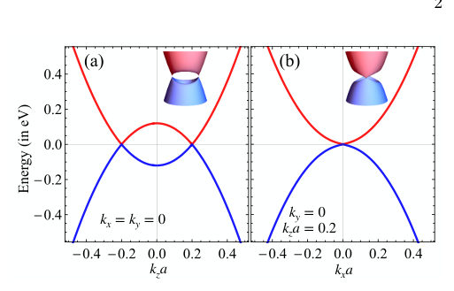
<figcaption class="paper-figure-caption"><b>Fig 1.</b> FIG. 2. Energy dispersion for Eq. (1) as a function of (a) kz for kx = ky = 0, and (b) kx for ky = 0 and kz = 0.2/a. Here we have chosen b = 0.12 eV, t1 = 0.25 eV, t2 = 3 eV, and a = 1˚A, which corresponds to the separation between Weyl nodes to be 0.4 ˚A−1.</figcaption>
</figure>
<figure class="paper-figure-card">
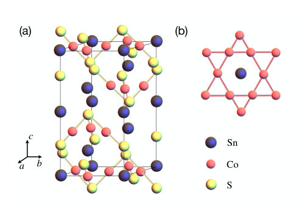
<figcaption class="paper-figure-caption"><b>Fig 2.</b> FIG. 1. (a) Layered structure of Co3Sn2S2 and (b) two di- mensional Co3Sn kagome layer. Reproduced from Fig. 1(a) of Ref.23.</figcaption>
</figure>
<figure class="paper-figure-card">
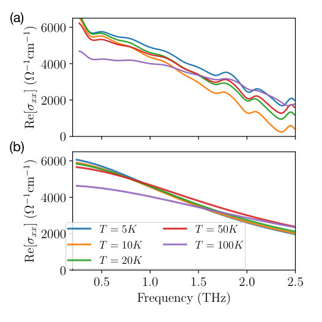
<figcaption class="paper-figure-caption"><b>Fig 3.</b> FIG. 3. Real part of the longitudinal optical conductivity as a function of frequency for five different temperatures as (a) measured experimentally and (b) computed using the model Hamiltonian given in Eq. (1) with parameters a = 1 ˚A, b = 0.12 eV, t1 = 0.25 eV, t2 = 3 eV, µ = 43 meV, γ0 = 7 meV, and γ = 0.034 meV/K.</figcaption>
</figure>
<figure class="paper-figure-card">
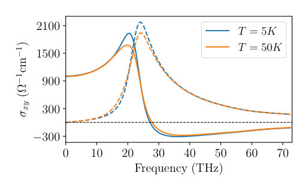
<figcaption class="paper-figure-caption"><b>Fig 4.</b> FIG. 4. Real (solid) and imaginary (dashed) parts of the transverse optical conductivity as a function of frequency for two different temperatures. Here, the interband scattering energy is Γinter = 10 meV, whereas the rest of the parameters are the same as in Fig. 3.</figcaption>
</figure>
<figure class="paper-figure-card">
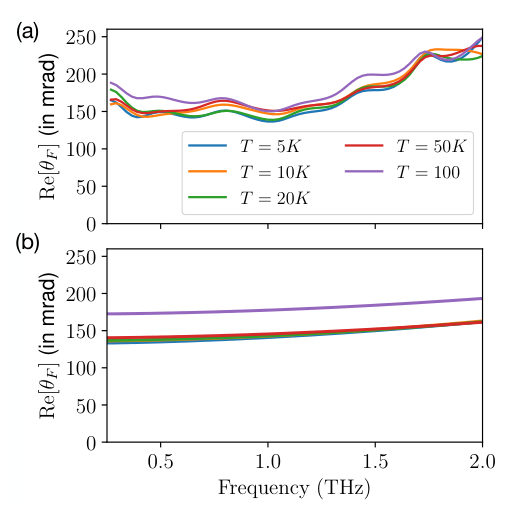
<figcaption class="paper-figure-caption"><b>Fig 5.</b> FIG. 5. Real part of the Faraday angle as a function of fre- quency for different values of temperature from (a) experi- mental data and (b) Eq. (1). The film thickness is d = 50 nm, and the substrate refractive index is ns = 1.6. Other param- eters are the same as in Fig. 3.</figcaption>
</figure>
</div>

<p><strong>Summary.</strong> This work systematically analyzes the Terahertz anomalous Hall effect in the Weyl semimetal $  ext{Co}<em xx>3   ext{Sn}_2   ext{S}_2$. By developing an effective low-energy model Hamiltonian, the authors calculate the intrinsic optical conductivity components ($\sigma</em>$ and $\sigma_{xy}$). The theoretical results provide a robust explanation for the observed magneto-optical behavior by linking it directly to the momentum-space separation of the Weyl nodes.</p>
<p><strong>Why it may be interesting.</strong> While primarily condensed matter physics, the use of linear response theory (Kubo formalism) to model optical response and the explicit connection between band topology (Weyl nodes) and macroscopic transport properties (AHE) are relevant concepts in open quantum systems and quantum optics.</p>
<details>
<summary>Detailed structure</summary>
<p><strong>Main problem.</strong> The study investigates the Terahertz anomalous Hall effect (AHE) in the magnetic Weyl semimetal $ ext{Co}_3   ext{Sn}_2   ext{S}_2$ by linking its intrinsic optical response to the momentum-space separation of its Weyl nodes.</p>
<p><strong>Main result.</strong> The theoretical model successfully reproduces the measured magneto-optical phenomena, explaining the longitudinal and transverse conductivity signatures in the THz range via intrinsic gyrotropy.</p>
<p><strong>Method.</strong> The authors employ the Kubo formalism to calculate optical conductivity ($\sigma_{xx}, \sigma_{xy}$) using a minimal two-band effective Hamiltonian, comparing these calculations against THz time-domain spectroscopy (THz-TDS) measurements.</p>
<p><strong>Model / system.</strong> The system is the magnetic Weyl semimetal $ ext{Co}_3   ext{Sn}_2   ext{S}_2$. The analysis uses a minimal two-band model Hamiltonian describing the electronic structure near the Weyl nodes, which exhibit Berry curvature sources and sinks.</p>
<p><strong>Key observables.</strong> Longitudinal conductivity ($   ext{Re}[\sigma_{xx}]$), transverse (Hall) conductivity ($    ext{Re}[\sigma_{xy}]$), and the Faraday rotation angle ($    ext{Re}[\Theta_F]$) in the THz frequency range.</p>
<p><strong>Important parameters / regimes.</strong> Momentum-space separation ($Q$) between Weyl nodes, chemical potential ($\mu$), and the energy parameter $b$ derived from the material structure.</p>
<p><strong>Assumptions / limitations.</strong> Key approximations include neglecting interband transitions ($\hbar\omega \ll \mu$) and assuming an effective low-energy model based on the two-node picture.</p>
<p><strong>Figures summary.</strong> Figures compare measured $ ext{Re}[\sigma_{xx}]$ vs. temperature with model calculations, show $   ext{Re}[\sigma_{xy}]$ saturation, and illustrate the temperature dependence of the chemical potential.</p>
<p><strong>Paper structure.</strong> The paper establishes the theoretical basis of AHE in Weyl semimetals, develops a minimal effective Hamiltonian, calculates the optical conductivity components ($\sigma_{xx}, \sigma_{xy}$) using the Kubo formula, and finally compares these theoretical predictions with experimental THz-TDS data.</p>
</details>
<details>
<summary>Abstract</summary>
<p>Time-reversal-symmetry-broken Weyl semimetals are known to have at least two nodes in their electronic band structure, separated in momentum space and acting as sources and sinks of Berry curvature. This gives rise to a transverse Hall conductivity, known as the anomalous Hall effect (AHE), which, in the simplest two-node picture, is proportional to the momentum-space separation between the nodes in the zero frequency limit. In the recently discovered Weyl semimetal $\mathrm{Co_3Sn_2S_2}$, a giant AHE has been observed. However, experimental investigations in the low-energy regime, which directly probe quasiparticle excitations near the Weyl nodes, remain limited. Here, we present a systematic study of the intrinsic low-energy gyrotropic optical response of $\mathrm{Co_3Sn_2S_2}$ using terahertz spectroscopy combined with semianalytical calculations based on a physically intuitive effective model. Our results provide a robust and transparent explanation of the observed magnetooptical phenomena in terms of intrinsic gyrotropy arising from momentum-space separation of the Weyl nodes. Furthermore, quantitative comparison between experiment and theory places stringent constraints on the material parameters.</p>
</details>
<p><sub><a href="#top">↑ back to top</a></sub></p>

<p><a id="paper-2608.27025"></a></p>
<h3 id="intrinsic-anomalous-hall-response-in-the-bilayer-kagome-ferromagnet-comath1109mathsn"><a href="http://arxiv.org/abs/2608.27025v1">Intrinsic anomalous Hall response in the bilayer kagome ferromagnet Co$_3$Sn</a></h3>
<p><strong>Authors:</strong> Yuqi Qin, Soumya Sankar, Xingkai Cheng, Yifan Jiang, Shiming Lei, Junwei Liu, Berthold Jäck<br>
<strong>Type:</strong> both · <strong>Category:</strong> other · <strong>PDF:</strong> <a href="https://arxiv.org/pdf/2608.27025v1">https://arxiv.org/pdf/2608.27025v1</a><br>
<strong>Analysis basis:</strong> full PDF text, analyzed in chunks
<strong>Topic relevance:</strong> <code>analog quantum simulation</code> <strong>2/5</strong></p>
<div class="figure-strip-hint">↔ Scroll figures horizontally</div>
<div class="paper-figures-scroll">
<figure class="paper-figure-card">
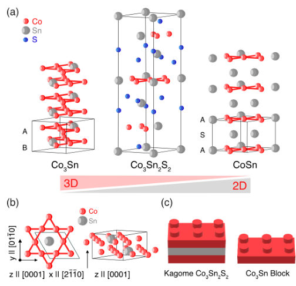
<figcaption class="paper-figure-caption"><b>Fig 1.</b> FIG. 1: Co3Sn: A kagome Lego. (a) Shown is the alternating arrangement of kagome Co3Sn and stanene (Sn2) layers, which facilitates the transition from a 3D compound to a quasi-2D compound CoSn. (b) Shown is the crystal structure of a Co3Sn layer (left) and the 3D crystal structure of Co3Sn. (c) Shown is the formation of Co3Sn2S2 kagome lattices from the Co3Sn kagome block.</figcaption>
</figure>
<figure class="paper-figure-card">
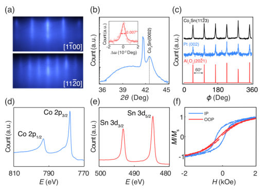
<figcaption class="paper-figure-caption"><b>Fig 2.</b> FIG. 2: Structural and magnetic characterization of the in-plane kagome ferromagnet Co3Sn. (a) Shown are the RHEED patterns of the Co3Sn thin film after growth along the [1¯100] (top) and [11¯20] (bottom) azimuths. (b) Shown is the X-ray diffraction pattern of a Co3Sn thin film, exhibiting diffraction peaks correspond- ing to Al2O3 (0006) and Co3Sn (0002) at 41.7◦and 42.6◦, respectively. (c) Shown is the ϕ-scan spectrum of the Co3Sn thin film. (d) Shown is the XPS core-level spec- trum of Co 2p, revealing the characteristic Co 2p3/2 and Co 2p1/2 peaks along with their shake-up satellites. (e) Shown is the XPS core-level spectrum of Sn 3d, display- ing the Sn 3d5/2 and Sn 3d3/2 peaks. (f)...</figcaption>
</figure>
<figure class="paper-figure-card">
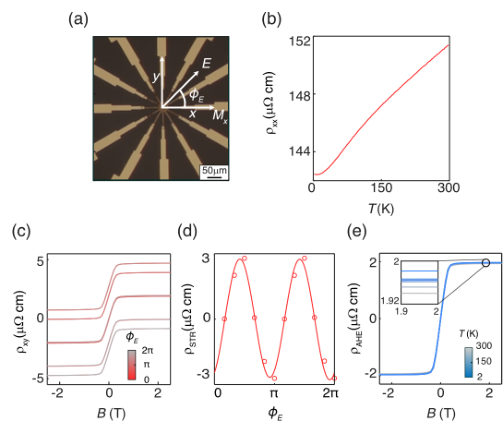
<figcaption class="paper-figure-caption"><b>Fig 3.</b> FIG. 3: Electric transport of in-plane kagome fer- romagnetic Co3Sn. (a) Shown is the optical image of the circular Hall bar device; the magnetization is fixed along Mx, and ϕE is the azimuthal angle between the electric field and the x-axis. (b) Shown is the temper- ature (T) dependent longitudinal resistivity (ρxx). (c) Shown is the transverse resistivity (ρxy) as a function of azimuthal angle ϕE. (d) Shown is the dependence of ρSTRS as a function of the azimuthal angle ϕE. (e) Shown is the anomalous Hall resistivity (ρAHE) as a function of the magnetic field B at different indicated temperatures.</figcaption>
</figure>
<figure class="paper-figure-card">
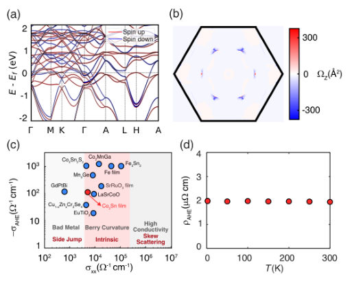
<figcaption class="paper-figure-caption"><b>Fig 4.</b> FIG. 4: Berry curvature, band structure, and anomalous Hall conductivity. Calculated band struc- ture with SOC along high-symmetry paths in the Bril- louin zone, where red and blue dots denote the spin pro- jection along the z direction. (b) Calculated Berry cur- vature Ωz(k) distribution in the kz = 0 plane, showing intense hotspots around the Fermi-level. (c) Scaling anal- ysis of −σAHE as a function of σxx for various material systems [7, 35–43]. The Co3Sn film (red) falls into the intrinsic Berry curvature-dominated regime. (d) Tem- perature (T) dependence of ρAHE from 2 to 300 K.</figcaption>
</figure>
</div>

<p><strong>Summary.</strong> This work reports the synthesis and characterization of $  ext{Co}_3   ext{Sn}$, a room-temperature kagome ferromagnet thin film. Experimentally, the material exhibits a large, temperature-independent anomalous Hall effect. Theoretically, the AHE is successfully linked to intrinsic Berry curvature hotspots calculated from the material's spin-split band structure.</p>
<p><strong>Why it may be interesting.</strong> While not directly related to quantum information, the study of topological electronic properties (Berry curvature) in magnetic materials is foundational to understanding emergent quantum phenomena in condensed matter physics, which underpins quantum computing hardware.</p>
<details>
<summary>Detailed structure</summary>
<p><strong>Main problem.</strong> The study investigates the intrinsic anomalous Hall response in the bilayer kagome ferromagnet $  ext{Co}_3   ext{Sn}$.</p>
<p><strong>Main result.</strong> The material exhibits robust easy-plane ferromagnetism and a large, temperature-independent anomalous Hall conductivity ($\sigma_{	ext{AHE}} \approx 90 \ \Omega^{-1} \cdot 	ext{cm}^{-1}$), which is theoretically attributed to intrinsic Berry curvature hotspots.</p>
<p><strong>Method.</strong> The research combines experimental techniques like Molecular Beam Epitaxy (MBE) and magneto-transport measurements with first-principles Density Functional Theory (DFT) calculations.</p>
<p><strong>Model / system.</strong> The physical system is high-quality thin films of $ ext{Co}_3   ext{Sn}$, a kagome metal, grown epitaxially in a bilayer stacking sequence. The electronic properties are analyzed using DFT to map the spin-split band structure and Berry curvature.</p>
<p><strong>Key observables.</strong> Anomalous Hall conductivity ($\sigma_{	ext{AHE}}$), magnetic anisotropy (easy-plane ferromagnetism), and the Berry curvature hotspots near the Fermi level.</p>
<p><strong>Important parameters / regimes.</strong> Curie temperature ($T_C > 300\,	ext{K}$), carrier density ($n\approx5.01	imes10^{22}\,	ext{cm}^{-3}$), and the temperature independence of $\sigma_{	ext{AHE}}$ up to room temperature.</p>
<p><strong>Assumptions / limitations.</strong> The anomalous Hall response is assumed to be dominated by the intrinsic Berry curvature effect, which is confirmed by matching DFT calculations to experimental transport data.</p>
<p><strong>Figures summary.</strong> Figures illustrate the kagome structure, characterization results (XRD, XPS, $M(H)$ isotherms showing easy-plane ferromagnetism), and transport measurements showing the temperature-independent AHE.</p>
<p><strong>Paper structure.</strong> The paper follows a standard structure: synthesis and structural characterization (MBE, XRD, XPS) $
ightarrow$ magnetic characterization (Magnetometry) $
ightarrow$ transport measurements (Hall effect, AHE) $
ightarrow$ theoretical modeling (DFT calculation of Berry curvature) $
ightarrow$ conclusion linking theory and experiment.</p>
</details>
<details>
<summary>Abstract</summary>
<p>Transition-metal kagome magnets provide a rich platform for investigating the interplay between layer stacking, magnetic order, and band topology. Here, we report the molecular beam epitaxy and experimental investigation of high-quality thin films of the kagome metal Co$_3$Sn, which has not been synthesized in bulk form yet. Structural and chemical analyses confirm a hexagonal lattice structure ($P6_3/mmc$) composed of direct A-B stacked Co$_3$Sn kagome bilayers. Magnetometry reveals robust easy-plane ferromagnetism with a Curie temperature exceeding $300\,\text{K}$. Magneto-transport measurements demonstrate metallic behavior (carrier density $n\approx5.01\times10^{22}\,\text{cm}^{-3}$) alongside a temperature-independent anomalous Hall conductivity of $σ_{\rm AHE}\approx90\,Ω^{-1}\cdot{\rm cm}^{-1}$, extending from $2\,\text{K}$ up to room temperature. Results from first-principles density functional theory calculations attribute this anomalous Hall response to intrinsic Berry curvature hotspots near the Fermi level in the spin-split band structure. Our results establish Co$_3$Sn as a room-temperature kagome ferromagnet and highlight the impact of the layer stacking sequence on the material properties of kagome metals from the CoSn family.</p>
</details>
<p><sub><a href="#top">↑ back to top</a></sub></p>

<p><a id="paper-2608.27377"></a></p>
<h3 id="mobility-enhancement-in-sisige-quantum-well-enabled-by-a-buried-si-layer-trapping-oxygen-impurities"><a href="http://arxiv.org/abs/2608.27377v1">Mobility Enhancement in Si/SiGe Quantum Well Enabled by a Buried Si Layer Trapping Oxygen Impurities</a></h3>
<p><strong>Authors:</strong> Felix Reichmann, Alberto Mistroni, Fabian Fidorra, Giovanni Capellini, Yuji Yamamoto, Marco Lisker, Marvin H. Zoellner<br>
<strong>Type:</strong> experiment · <strong>Category:</strong> other · <strong>PDF:</strong> <a href="https://arxiv.org/pdf/2608.27377v1">https://arxiv.org/pdf/2608.27377v1</a><br>
<strong>Analysis basis:</strong> full PDF text, analyzed in chunks
<strong>Topic relevance:</strong> <code>QC/QI experiment</code> <strong>2/5</strong></p>
<div class="figure-strip-hint">↔ Scroll figures horizontally</div>
<div class="paper-figures-scroll">
<figure class="paper-figure-card">
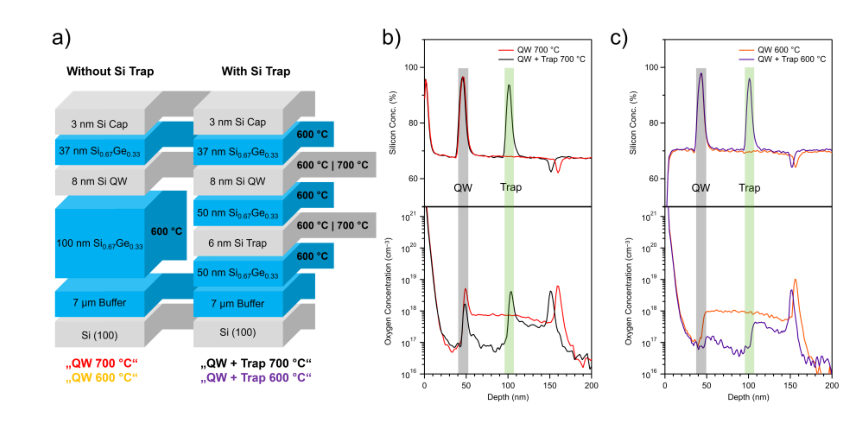
<figcaption class="paper-figure-caption"><b>Fig 1.</b> Figure 1: Schematic layer sequences and secondary-ion mass spectrometry analysis of oxygen incorporation in Si/SiGe heterostructures with different Si quantum-well (QW) growth temperatures and with or without an inserted Si trap layer. (a) Schematic layer sequences of the heterostructures without and with a buried 6 nm Si trap layer. The labels below the schematics denote the four investigated growth configurations and correspond to the color coding used in panels (b) and (c). In heterostructures with Si trap, the QW and trap were grown at the same temperature, either at 600 ◦C or at 700 ◦C. (b) Silicon and oxygen depth profiles for structures with a 700 ◦C-grown Si QW, comparing samples...</figcaption>
</figure>
<figure class="paper-figure-card">
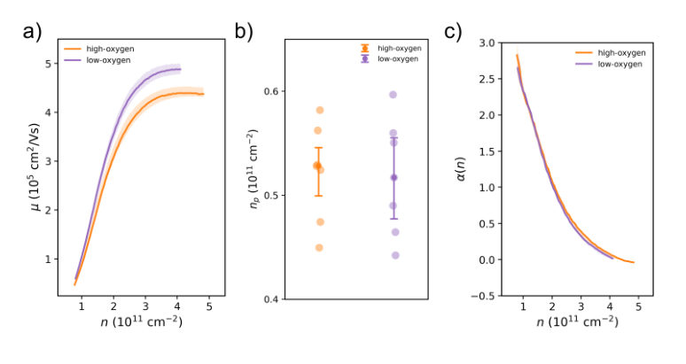
<figcaption class="paper-figure-caption"><b>Fig 2.</b> Figure 2: Density-dependent transport comparison of high-oxygen (orange) and low-oxygen (purple) Si/SiGe HB-FETs at 1.5 K. Seven devices have been investigated from each group. (a) Median mobility as a function of carrier density. Shaded regions indicate the 25th–75th percentile range within each group. (b) Percolation density np extracted from the low-density conductivity regime. Individual devices are shown as data points, with the box plot indicating the device-to-device distribution for each group. (c) Median density-dependent mobility exponent α(n), obtained by first extracting α(n) from each raw mobility curve using the logarithmic derivative and then taking the median across devices.</figcaption>
</figure>
<figure class="paper-figure-card">
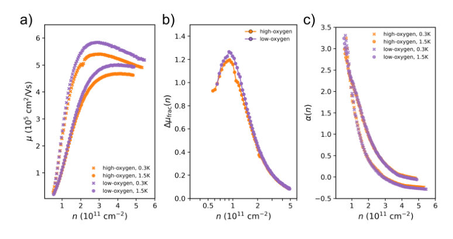
<figcaption class="paper-figure-caption"><b>Fig 3.</b> Figure 3: Temperature-dependent transport response of representative high-oxygen (orange) and low-oxygen (purple) Si/SiGe HB-FETs upon cooling from 1.5 K (dots) to 0.3 K (crosses). (a) Mobility as a function of carrier density. (b) Fractional mobility gain ∆µfrac(n) upon cooling from 1.5 K to 0.3 K. (c) Density- dependent mobility exponent α(n), extracted from the logarithmic derivative of the mobility curves.</figcaption>
</figure>
</div>

<p><strong>Summary.</strong> This work demonstrates a straightforward method—inserting a buried Si layer—to significantly reduce detrimental oxygen impurities in Si/SiGe quantum wells. By correlating impurity reduction with transport measurements, the authors show that while oxygen is a key mobility limiter, the fundamental density-dependent transport physics remains unchanged, providing a crucial materials engineering handle for improving quantum device performance.</p>
<p><strong>Why it may be interesting.</strong> While the focus is on semiconductor device physics, the rigorous characterization of disorder effects ($\alpha(n)$ vs. $n_p$) and the engineering solution for impurity mitigation are highly relevant to controlling disorder in solid-state quantum platforms.</p>
<details>
<summary>Detailed structure</summary>
<p><strong>Main problem.</strong> The primary challenge addressed is reducing disorder, specifically oxygen impurities, in undoped Si/SiGe heterostructures, which limits performance in scalable quantum devices like electron spin qubits.</p>
<p><strong>Main result.</strong> Introducing a thin, buried Si layer successfully reduces the oxygen background concentration by a factor of five, leading to an increased absolute electron mobility without altering the fundamental density-dependent transport scaling or percolation threshold.</p>
<p><strong>Method.</strong> The study combines materials characterization using Secondary-ion Mass Spectrometry (SIMS) with detailed magnetotransport measurements (Hall-bar FETs) across varying carrier densities and temperatures.</p>
<p><strong>Model / system.</strong> The physical system is an undoped Si/SiGe quantum-well heterostructure grown via RP-CVD on 200 mm Si(100) substrates. The key modification is the introduction of an electrically passive buried Si layer within the SiGe barrier.</p>
<p><strong>Key observables.</strong> Electron mobility ($\mu$), oxygen background concentration (SIMS), percolation density ($n_p$), and the density-dependent mobility exponent ($\alpha(n)$).</p>
<p><strong>Important parameters / regimes.</strong> Temperature (0.3 K to 1.5 K), carrier density ($n$), and the concentration of oxygen impurities.</p>
<p><strong>Assumptions / limitations.</strong> The buried Si layer is assumed to be electrically passive and acts solely as a physical barrier to trap oxygen impurities during growth.</p>
<p><strong>Figures summary.</strong> Figures compare SIMS depth profiles showing oxygen reduction; transport measurements compare $\mu(n)$, $n_p$, and $\alpha(n)$ curves for high- vs. low-oxygen devices at different temperatures.</p>
<p><strong>Paper structure.</strong> The paper first establishes the problem of oxygen-limited mobility. It then details the engineering solution (buried Si layer) and uses SIMS to confirm oxygen reduction. Finally, it presents magnetotransport data showing that while absolute mobility increases, the characteristic density-dependent transport scaling remains robust.</p>
</details>
<details>
<summary>Abstract</summary>
<p>Reducing disorder in undoped Si/SiGe field-effect heterostructures remains an important materials challenge for scalable quantum devices, particularly electron spin qubits. Background impurities such as oxygen have been identified as mobility-limiting, yet practical heterostructure-design strategies for suppressing their incorporation remain underexplored, and their influence across different transport regimes is not fully established. Here, we demonstrate a simple route to oxygen reduction and mobility enhancement in Si/SiGe quantum-well heterostructures grown by reduced-pressure chemical vapor deposition (RP-CVD) on 200 mm Si(100) substrates through the introduction of a thin, electrically passive buried Si layer within the lower SiGe barrier. Secondary-ion mass spectrometry shows that the buried Si layer reproducibly reduces the oxygen background in the subsequently grown SiGe by approximately a factor of five, without modifying the active quantum-well region. Density- and temperature-dependent magnetotransport measurements further show that this reduction increases the electron mobility, while leaving the percolation density and density-dependent mobility scaling largely unchanged. Upon cooling to 0.3 K, both high- and low-oxygen devices exhibit similar density-dependent fractional mobility enhancements, indicating that the reduced oxygen background improves momentum relaxation without substantially altering the dominant low-density disorder landscape. These results establish the buried Si layer as a straightforward and process-compatible heterostructure-design element for reducing oxygen incorporation and improving transport in 200 mm CVD-grown Si/SiGe quantum-device materials.</p>
</details>
<p><sub><a href="#top">↑ back to top</a></sub></p>

<p><a id="paper-2608.27064"></a></p>
<h3 id="giant-bulk-photovoltaic-effect-driven-by-interfacial-symmetry-breaking-in-mos2ta2nise5-heterostructures"><a href="http://arxiv.org/abs/2608.27064v1">Giant bulk photovoltaic effect driven by interfacial symmetry breaking in MoS2/Ta2NiSe5 heterostructures</a></h3>
<p><strong>Authors:</strong> Jianwen Ma, Pengliang Leng, Lei Peng, Congming Hao, Xianghao Meng, Jiaqi Liu, Yang Gan, Min Luo, Zifan Zhang, Jiaming Gu, Qinghang Liu, Lidan Duan, Du Xiang, Wu Shi, Peng Wang, Weibin Chu, Xiang Yuan, Weida Hu, Cheng Zhang<br>
<strong>Type:</strong> both · <strong>Category:</strong> other · <strong>PDF:</strong> <a href="https://arxiv.org/pdf/2608.27064v1">https://arxiv.org/pdf/2608.27064v1</a><br>
<strong>Analysis basis:</strong> full PDF text, analyzed in chunks
<strong>Topic relevance:</strong> <code>Keldysh / 2PI / non-Gaussian methods</code> <strong>1/5</strong> · <code>analog quantum simulation</code> <strong>1/5</strong> · <code>driven-dissipative phase transition</code> <strong>1/5</strong> · <code>methods for driven-dissipative</code> <strong>1/5</strong> · <code>non-equilibrium universality</code> <strong>1/5</strong> · <code>quantum measurements</code> <strong>1/5</strong></p>
<div class="figure-strip-hint">↔ Scroll figures horizontally</div>
<div class="paper-figures-scroll">
<figure class="paper-figure-card">
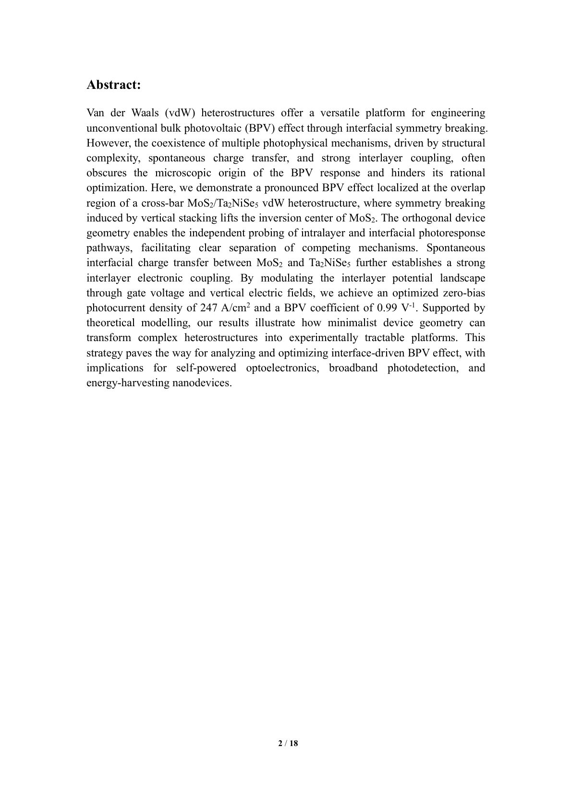
<figcaption class="paper-figure-caption"><b>Fig 1.</b> Low-resolution page preview, page 2</figcaption>
</figure>
<figure class="paper-figure-card">
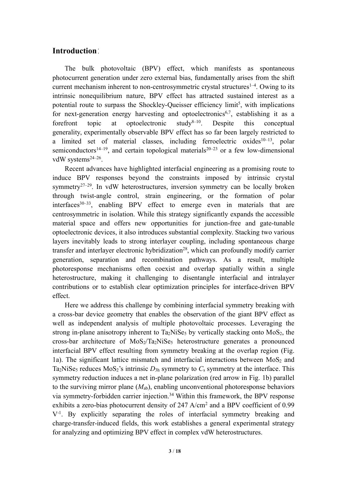
<figcaption class="paper-figure-caption"><b>Fig 2.</b> Low-resolution page preview, page 3</figcaption>
</figure>
<figure class="paper-figure-card">
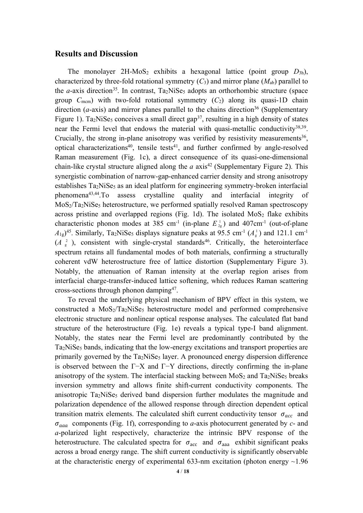
<figcaption class="paper-figure-caption"><b>Fig 3.</b> Low-resolution page preview, page 4</figcaption>
</figure>
<figure class="paper-figure-card">
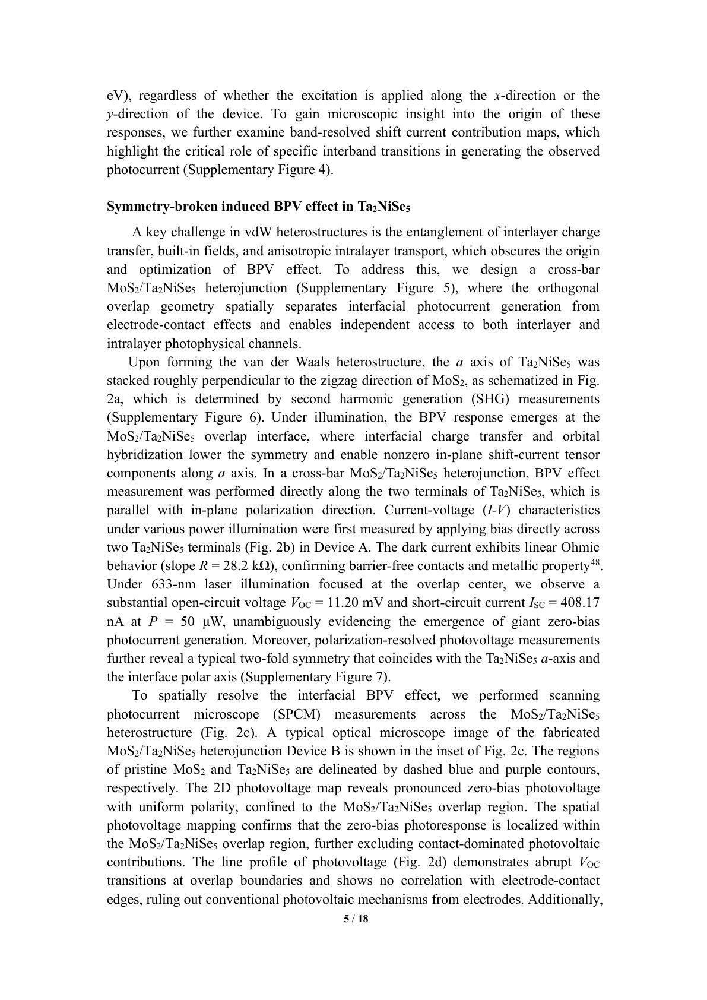
<figcaption class="paper-figure-caption"><b>Fig 4.</b> Low-resolution page preview, page 5</figcaption>
</figure>
<figure class="paper-figure-card">
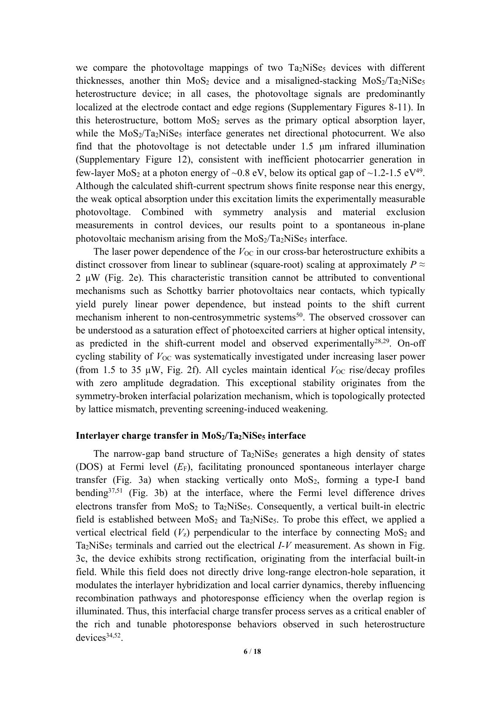
<figcaption class="paper-figure-caption"><b>Fig 5.</b> Low-resolution page preview, page 6</figcaption>
</figure>
</div>

<p><strong>Summary.</strong> This paper reports on achieving a giant bulk photovoltaic effect in a $    ext{MoS}_2/ ext{Ta}_2   ext{NiSe}_5$ heterostructure by engineering interfacial symmetry breaking. Using a specialized cross-bar device, the authors successfully separated competing photophysical mechanisms to quantify a high BPV response. This work provides a platform for designing self-powered optoelectronic devices based on interface engineering.</p>
<p><strong>Why it may be interesting.</strong> While focused on solid-state optoelectronics, the concept of engineered symmetry breaking to control electronic response is analogous to controlling coupling terms in open quantum systems or designing tailored quantum interfaces.</p>
<details>
<summary>Detailed structure</summary>
<p><strong>Main problem.</strong> The primary challenge is disentangling the microscopic origins and optimizing the bulk photovoltaic (BPV) effect in complex Van der Waals (vdW) heterostructures where multiple photophysical mechanisms overlap.</p>
<p><strong>Main result.</strong> The authors demonstrate a giant BPV effect localized at the $  ext{MoS}_2/ ext{Ta}_2   ext{NiSe}_5$ interface, achieving a high photocurrent density ($247 	ext{ A/cm}^2$) by exploiting symmetry breaking.</p>
<p><strong>Method.</strong> The study combines advanced electrical measurements (I-V, photovoltage mapping, gate-tuning) with theoretical modeling (DFT calculations of conductivity tensors).</p>
<p><strong>Model / system.</strong> The physical system is the $    ext{MoS}_2/ ext{Ta}_2   ext{NiSe}_5$ vdW heterostructure, studied using a cross-bar device geometry to isolate interfacial photoresponse.</p>
<p><strong>Key observables.</strong> Zero-bias photocurrent density ($247 	ext{ A/cm}^2$), BPV coefficient ($0.99 	ext{ V}^{-1}$), localized photovoltage enhancement, and gate-tunable barrier heights.</p>
<p><strong>Important parameters / regimes.</strong> Gate voltage ($ ext{V}_{    ext{BG}}$), vertical electric field ($    ext{V}_z$), and laser power density ($P$).</p>
<p><strong>Assumptions / limitations.</strong> The cross-bar geometry is crucial as a strategy to spatially separate and independently probe the contributions of interfacial symmetry breaking versus intralayer effects.</p>
<p><strong>Figures summary.</strong> Figures illustrate the device architecture, the localization of the BPV effect at the overlap region, the dependence of photoresponse on external biases, and comparisons of the BPV coefficient against other materials.</p>
<p><strong>Paper structure.</strong> The paper progresses by establishing the complex nature of BPV in vdW heterostructures, presenting the cross-bar device setup for controlled measurement, quantifying the giant BPV effect through electrical characterization, and supporting these findings with theoretical calculations of symmetry-dependent charge transport.</p>
</details>
<details>
<summary>Abstract</summary>
<p>Van der Waals (vdW) heterostructures offer a versatile platform for engineering unconventional bulk photovoltaic (BPV) effect through interfacial symmetry breaking. However, the coexistence of multiple photophysical mechanisms, driven by structural complexity, spontaneous charge transfer, and strong interlayer coupling, often obscures the microscopic origin of the BPV response and hinders its rational optimization. Here, we demonstrate a pronounced BPV effect localized at the overlap region of a cross-bar MoS2/Ta2NiSe5 vdW heterostructure, where symmetry breaking induced by vertical stacking lifts the inversion center of MoS2. The orthogonal device geometry enables the independent probing of intralayer and interfacial photoresponse pathways, facilitating clear separation of competing mechanisms. Spontaneous interfacial charge transfer between MoS2 and Ta2NiSe5 further establishes a strong interlayer electronic coupling. By modulating the interlayer potential landscape through gate voltage and vertical electric fields, we achieve an optimized zero-bias photocurrent density of 247 A/cm2 and a BPV coefficient of 0.99 V-1. Supported by theoretical modelling, our results illustrate how minimalist device geometry can transform complex heterostructures into experimentally tractable platforms. This strategy paves the way for analyzing and optimizing interface-driven BPV effect, with implications for self-powered optoelectronics, broadband photodetection, and energy-harvesting nanodevices.</p>
</details>
<p><sub><a href="#top">↑ back to top</a></sub></p>

<p><a id="paper-2608.26864"></a></p>
<h3 id="observation-of-dodecagonal-replica-bands-in-30math1138math-twisted-bilayer-wsemath1139math"><a href="http://arxiv.org/abs/2608.26864v1">Observation of dodecagonal replica bands in 30$^{\circ}$-twisted bilayer WSe$_2$</a></h3>
<p><strong>Authors:</strong> Christian Valentiner-Branth Fokdal, Chakradhar Sahoo, Thomas S. Nielsen, Alfred J. H. Jones, Zhihao Jiang, Kenji Watanabe, Takashi Taniguchi, Marcin Mucha-Kruczyński, Søren Ulstrup<br>
<strong>Type:</strong> both · <strong>Category:</strong> strongly correlated electrons · <strong>PDF:</strong> <a href="https://arxiv.org/pdf/2608.26864v1">https://arxiv.org/pdf/2608.26864v1</a><br>
<strong>Analysis basis:</strong> full PDF text, analyzed in chunks
<strong>Topic relevance:</strong> <code>Keldysh / 2PI / non-Gaussian methods</code> <strong>1/5</strong> · <code>analog quantum simulation</code> <strong>1/5</strong> · <code>quantum measurements</code> <strong>1/5</strong></p>
<div class="figure-strip-hint">↔ Scroll figures horizontally</div>
<div class="paper-figures-scroll">
<figure class="paper-figure-card">
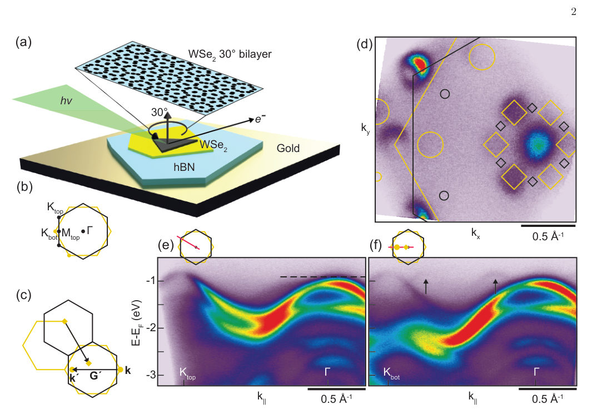
<figcaption class="paper-figure-caption"><b>Fig 1.</b> FIG. 1. (a) Schematic of micro-focused ARPES experiment on dodecagonal bilayer WSe2 supported on hBN on gold-coated SiO2. The blue panel illustrates the 30◦twist angle-induced structure. The black dots represent the W-atoms. The incoming photons with energy hν are focused on the sample, as illustrated by the green triangle, leading to emission of photoelectrons (e−). (b) Brillouin zones (BZs) of the 30◦-twisted WSe2 flakes. As in (a), yellow represents the bottom layer and black the top layer. (c) Overview of the relevant Umklapp scattering processes. (d) ARPES constant energy surface integrated over (−0.91±0.05) eV. The BZ segments are superimposed in black and yellow lines. Yellow (black)...</figcaption>
</figure>
<figure class="paper-figure-card">
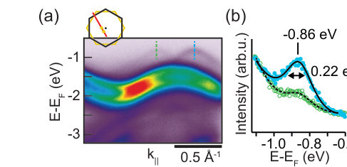
<figcaption class="paper-figure-caption"><b>Fig 2.</b> FIG. 2. (a) ARPES spectrum along a cut containing two second-order replicas. The red bar in the BZ inset marks the cut direction. (b) EDCs extracted along the green and blue dotted lines in (a), represented with open and filled cir- cles, respectively. The full and dashed curves overlaid on the data represent fits to a Voigt peak on a polynomial back- ground. The peak is centred at -0.86 eV and has Lorentzian full width at half maximum (FWHM) of 0.22 eV, as illus- trated by double-headed arrows.</figcaption>
</figure>
<figure class="paper-figure-card">
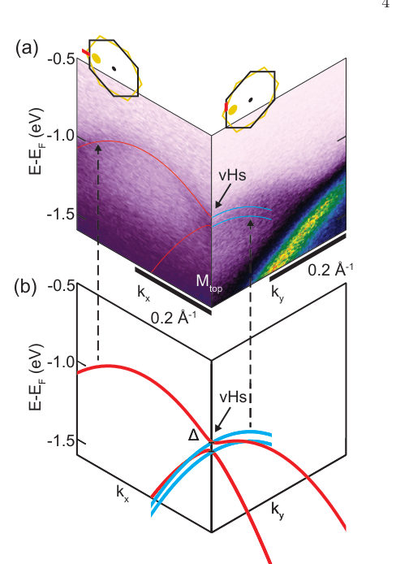
<figcaption class="paper-figure-caption"><b>Fig 3.</b> FIG. 3. (a) ARPES E(k)-dispersion cuts around the crossing between the main band of the bottom layer and a first order replica extracted along Γ-Kbot (left panel) and Ktop -Mtop (right panel). The red bars in the BZ insets show the cut directions. (b) Extracted dispersion around the band cross- ing based on fitting a gapped two-band model to the ARPES spectra in (a) [28]. The red (blue) curves correspond to the bands along kx (ky). The arrow points to a van Hove sin- gularity (vHs) at -1.05 eV where the band curvature changes sign between the two orthogonal cuts. Dashed arrows indicate the band positions in the ARPES spectra. An assumed gap of ∆= 0.06 eV at the band crossing is marked by a...</figcaption>
</figure>
<figure class="paper-figure-card">
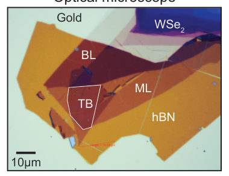
<figcaption class="paper-figure-caption"><b>Fig 4.</b> FIG. 4. Optical microscope image of the sample. The regions of monolayer (ML), bilayer (BL), twisted bilayer (TB), hBN, and gold are indicated. The blue region near the top is multilayer WSe2 acting as electrical contact to the gold.</figcaption>
</figure>
<figure class="paper-figure-card">
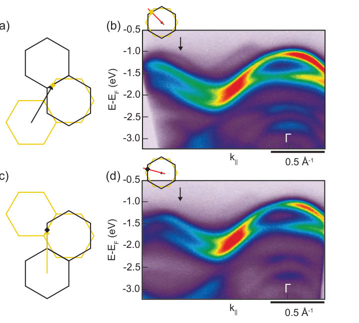
<figcaption class="paper-figure-caption"><b>Fig 5.</b> FIG. 5. (a) Scattering path for a bottom-to-top Γ-replica band using a top-layer reciprocal lattice vector (black arrow). (b) ARPES intensity measured along the cut shown in the BZ inset, which contains the Γ-replica originating from the process shown in (a). The black arrow demarcates the replica. (c) Scattering path for a top-to-bottom Γ-replica band, using a bottom-layer reciprocal vector (yellow arrow). (d) ARPES intensity along the direction shown in the BZ inset, through the expected position of a top-to-bottom Γ-replica. The arrow indicates where the missing replica should be.</figcaption>
</figure>
</div>

<p><strong>Summary.</strong> This work reports the direct observation of dodecagonal replica bands in $30^\circ$-twisted bilayer $    ext{WSe}_2$ using ARPES. By analyzing the spectral reconstruction, the authors confirm the presence of a van Hove singularity near the K-valleys. This suggests that large-angle twisted bilayer TMDs are promising platforms for inducing novel electronic states.</p>
<p><strong>Why it may be interesting.</strong> The study investigates emergent electronic properties (like vHs) in engineered van der Waals heterostructures using advanced spectroscopic techniques, which is highly relevant to understanding correlated phases in low-dimensional quantum materials.</p>
<details>
<summary>Detailed structure</summary>
<p><strong>Main problem.</strong> The research aims to determine the electronic structure and scattering processes within 2D quasicrystals exhibiting multiorbital dodecagonal replica bands.</p>
<p><strong>Main result.</strong> The authors directly observed replica bands in $30^\circ$-twisted bilayer $  ext{WSe}_2$ using ARPES, attributing them to interlayer Umklapp scattering and confirming a van Hove singularity near the K-valleys.</p>
<p><strong>Method.</strong> The study combines Angle-Resolved Photoemission Spectroscopy (ARPES) measurements with theoretical modeling using a two-band model to simulate the observed spectral function.</p>
<p><strong>Model / system.</strong> The physical system is $30^\circ$-twisted bilayer $   ext{WSe}_2$, which forms a quasicrystal structure. The analysis employs a two-band model to describe the hybridization and spectral reconstruction caused by interlayer coupling between the top and bottom layers.</p>
<p><strong>Key observables.</strong> Direct observation of dodecagonal replica bands, spectral function measurements showing a van Hove singularity (vHs) near the K-valleys, and layer-dependent intensity asymmetries.</p>
<p><strong>Important parameters / regimes.</strong> The twist angle of $30^\circ$, the energy of the vHs ($-1.05 	ext{ eV}$), and the replica band maximum energy ($-0.86 	ext{ eV}$).</p>
<p><strong>Assumptions / limitations.</strong> The analysis assumes that only states from the top and bottom valence bands mix, and that scattering processes can be modeled using first-order interlayer coupling approximations.</p>
<p><strong>Figures summary.</strong> Figures illustrate the ARPES setup and spectra along $\Gamma-	ext{K}$ cuts, showing replica bands. Other figures compare measured intensity to predictions from the two-band model, highlighting the vHs location and the effect of gap/linewidth on the spectral shape.</p>
<p><strong>Paper structure.</strong> The paper progresses from identifying the physical system and the unknown electronic structure to presenting ARPES measurements confirming replica bands. It then develops a theoretical framework (two-band model) to explain the observed spectral weight transfer and the existence of the vHs.</p>
</details>
<details>
<summary>Abstract</summary>
<p>Twisted bilayers of two-dimensional (2D) transition metal dichalcogenides are promising systems for achieving tunable quasicrystalline orders with emergent properties. The underpinning electronic structure and scattering processes in 2D quasicrystals with multiorbital dodecagonal replica bands have so far not been determined. Here, we utilize angle-resolved photoemission spectroscopy (ARPES) with micrometer spatial resolution to directly observe replica bands in 30$^{\circ}$-twisted bilayer WSe$_2$. The symmetry and intensity distribution of the observed replicas are explained by interlayer Umklapp scattering from bottom to top WSe$_2$ layers. Our spectral function measurements are consistent with the presence of a van Hove singularity adjacent to the $\mathrm{K}$-valleys, which underlines the possibility of inducing electronic reconstructions in bilayers with a large interlayer twist angle.</p>
</details>
<p><sub><a href="#top">↑ back to top</a></sub></p>

<p><a id="paper-2608.26979"></a></p>
<h3 id="hall-effect-in-viscous-flows-of-two-dimensional-electrons-in-samples-with-edges-of-arbitrary-roughness"><a href="http://arxiv.org/abs/2608.26979v1">Hall effect in viscous flows of two-dimensional electrons in samples with edges of arbitrary roughness</a></h3>
<p><strong>Authors:</strong> A. V. Gert, P. S. Alekseev<br>
<strong>Type:</strong> theory · <strong>Category:</strong> other · <strong>PDF:</strong> <a href="https://arxiv.org/pdf/2608.26979v1">https://arxiv.org/pdf/2608.26979v1</a><br>
<strong>Analysis basis:</strong> full PDF text, analyzed in chunks
<strong>Topic relevance:</strong> <code>Keldysh / 2PI / non-Gaussian methods</code> <strong>1/5</strong> · <code>correlated / nonlocal dissipation</code> <strong>1/5</strong></p>
<div class="figure-strip-hint">↔ Scroll figures horizontally</div>
<div class="paper-figures-scroll">
<figure class="paper-figure-card">
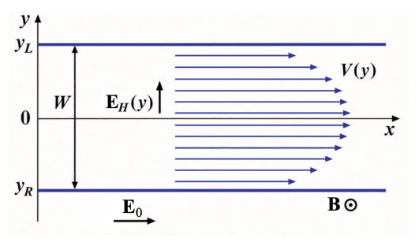
<figcaption class="paper-figure-caption"><b>Fig 1.</b> FIG. 1. Flow of a 2D electron fluid in a long sample with mod- erately rough edges, corresponding to substantial slip of the fluid flow at the edges. The following quantities are indicated: the external electric field E0; the magnetic field B, perpendic- ular to the 2D electron layer; Hall electric field EH(y), arising to compensate for the magnetic Lorentz force in the y direc- tion; the velocity profile of the electron flow Vx(y) = V (y).</figcaption>
</figure>
<figure class="paper-figure-card">
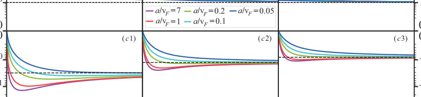
<figcaption class="paper-figure-caption"><b>Fig 2.</b> FIG. 2. Characteristics of the flow of the 2D electron fluid in long samples with three widths W and various degrees of edge roughness, described by the parameter a. The columns correspond to different ratios of the sample width to the relaxation lengths limp = vF τimp and lee = vF τee, indicated at the top. The parameter ξ0 = λ0W/2, governing the relative contributions of the Ohmic and hydrodynamic components at zero magnetic field, takes the values 0.16, 0.32, and 0.63 for the three columns. The top row [panels (a1)–(a3)] shows the hydrodynamic velocity profiles V (y) on a linear scale (see Fig. 1). The middle row [panels (b1)–(b3)] presents the mean sample longitudinal resistivities ρxx =...</figcaption>
</figure>
<figure class="paper-figure-card">
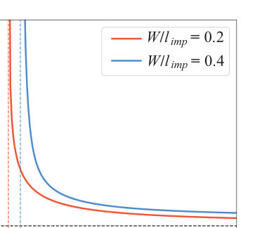
<figcaption class="paper-figure-caption"><b>Fig 3.</b> FIG. 3. Position of the minimum βmin of the correction to the Hall resistance δρxy(β) [see Fig. 2(c1)–(c3)] as a func- tion of the parameter a for samples of two different widths. The curves βmin(a) have vertical asymptotes at a = a0 = W/(2τimp), corresponding to s = [W/(2τimp)]/a = 1, at which the dependence δρxy(β) changes from monotonic to non-monotonic, with a minimum. As the parameter a in- creases, all curves saturate at βmin &gt; 1, corresponding to the purely bulk result [Eq. (12) at s = 0].</figcaption>
</figure>
</div>

<p><strong>Summary.</strong> This theoretical work models the magnetotransport of 2D electron fluids in samples with rough edges by treating the system hydrodynamically. It derives expressions for the Hall resistance correction, $\delta
ho_{xy}(B)$, which is predicted to show a characteristic minimum at high magnetic fields when edge roughness is significant. This minimum provides a measurable signature to experimentally determine the degree of edge roughness.</p>
<p><strong>Why it may be interesting.</strong> While focused on condensed matter transport, the use of hydrodynamic equations and the development of diagnostic signatures (like the minimum in $\delta
ho_{xy}$) to characterize boundary conditions is relevant to understanding non-equilibrium dynamics in mesoscopic systems.</p>
<details>
<summary>Detailed structure</summary>
<p><strong>Main problem.</strong> The paper develops a theory to describe the hydrodynamic magnetotransport of two-dimensional (2D) electron fluids in samples whose edges possess arbitrary roughness.</p>
<p><strong>Main result.</strong> The Hall resistance correction, $\delta
ho_{xy}(B)$, exhibits a non-monotonic dependence on the magnetic field, showing a minimum at sufficiently rough edges, which can be used as a diagnostic tool to measure edge roughness.</p>
<p><strong>Method.</strong> The analysis uses the Navier-Stokes equations for the electron fluid flow, incorporating boundary conditions derived from a local collision operator to model edge scattering.</p>
<p><strong>Model / system.</strong> The system is a 2D electron gas confined in a sample geometry, modeled as a viscous electron fluid. The theory accounts for bulk scattering (defects) and boundary scattering (edges) using a hydrodynamic approximation for the distribution function.</p>
<p><strong>Key observables.</strong> Longitudinal and Hall resistances ($
ho_{xx}, 
ho_{xy}$), and specifically the relaxation contribution to the Hall resistance, $\delta
ho_{xy}(B)$.</p>
<p><strong>Important parameters / regimes.</strong> Edge roughness parameter ($a$), sample width ($W$), bulk defect scattering rate ($\gamma_{imp}$), and the magnetic field ($B$).</p>
<p><strong>Assumptions / limitations.</strong> The theory relies on the hydrodynamic approximation for the distribution function and assumes the electron-electron collision time is much shorter than the impurity scattering time ($  au_{ee} \ll     au_{imp}$).</p>
<p><strong>Figures summary.</strong> Figures illustrate velocity profiles, longitudinal resistivity, and the Hall correction ($\delta
ho_{xy}$) for varying sample widths and edge roughness parameters, showing the minimum dependence on the magnetic field.</p>
<p><strong>Paper structure.</strong> The paper builds the theory by defining the governing equations (Navier-Stokes, collision integrals) for the hydrodynamic flow. It then calculates the resistivities ($
ho_{xx}, 
ho_{xy}$) and analyzes the magnetic field dependence of the Hall correction ($\delta
ho_{xy}$), establishing diagnostic criteria based on the minimum value.</p>
</details>
<details>
<summary>Abstract</summary>
<p>In ultra-clean conductors, fast inter-particle collisions can lead to the formation of a viscous electron fluid and realization of the hydrodynamic transport regime. Here we develop a theory of hydrodynamic magnetotransport of two-dimensional (2D) electrons in samples with low densities of defects and edges of arbitrary roughness. Within our model the roughness is described by a single parameter with the dimension of speed in the boundary conditions on sample edges. The electron-fluid flow profiles in long samples, as well as the corresponding longitudinal and Hall resistances, are calculated. The contribution to the Hall resistance associated with the relaxation processes exhibits a saturation in the limit of high magnetic field and a minimum as a function of the magnetic field for sufficiently rough edges. The minimum disappears as the edge roughness decreases or the sample width and bulk scattering by defects increase. These properties of the Hall resistance can serve as the signs to identify the hydrodynamic regime of electron transport in experiments and can be used to determine its parameters, in particular, the degree of edge roughness.</p>
</details>
<p><sub><a href="#top">↑ back to top</a></sub></p>

<p><a id="paper-2608.26521"></a></p>
<h3 id="optical-spectroscopy-of-composite-fermion-edge-states-in-the-fractional-quantum-hall-effect"><a href="http://arxiv.org/abs/2608.26521v1">Optical spectroscopy of composite fermion edge states in the fractional quantum Hall effect</a></h3>
<p><strong>Authors:</strong> Maria Sebastian, Ashutosh Singh, Alexey Belyanin<br>
<strong>Type:</strong> theory · <strong>Category:</strong> strongly correlated electrons · <strong>PDF:</strong> <a href="https://arxiv.org/pdf/2608.26521v1">https://arxiv.org/pdf/2608.26521v1</a><br>
<strong>Analysis basis:</strong> full PDF text, analyzed in chunks
<strong>Topic relevance:</strong> <code>Keldysh / 2PI / non-Gaussian methods</code> <strong>1/5</strong> · <code>analog quantum simulation</code> <strong>1/5</strong></p>
<div class="figure-strip-hint">↔ Scroll figures horizontally</div>
<div class="paper-figures-scroll">
<figure class="paper-figure-card">
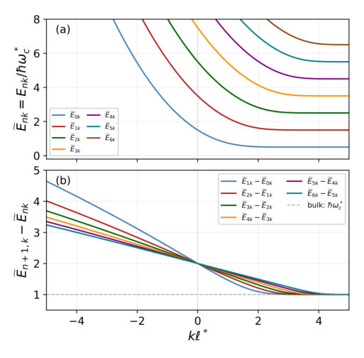
<figcaption class="paper-figure-caption"><b>Fig 1.</b> FIG. 1. CF Λ-level dispersion near a hard-wall edge. All quantities are dimensionless. Energies are normalized by ℏω∗ c and momentum by ℓ∗. (a) The seven lowest Λ-level energies eEnk = Enk/ℏω∗ c as a function of kℓ∗, with n = p −1. Levels are flat and equidistant in the bulk (large positive kℓ∗) and bend upward nonuniformly near the edge (negative kℓ∗). (b) Consecutive transition energies eEn+1,k −eEnk for n = 0 to 5. All approach the bulk cyclotron energy ℏω∗ c (dashed line) for large positive kℓ∗and rise to higher frequencies near the edge.</figcaption>
</figure>
<figure class="paper-figure-card">
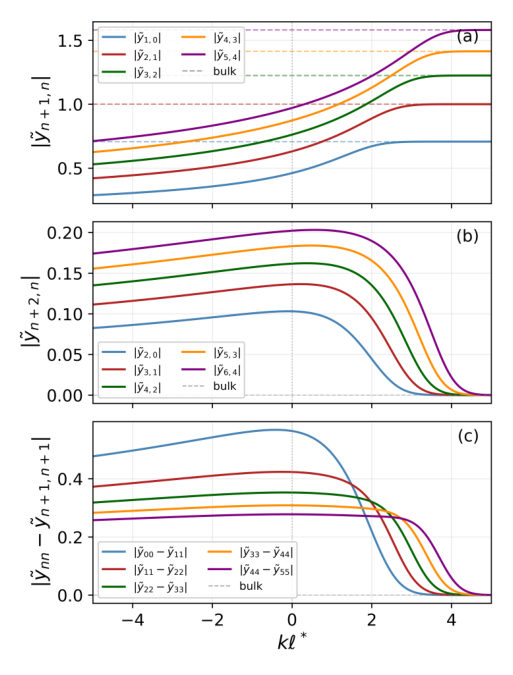
<figcaption class="paper-figure-caption"><b>Fig 2.</b> FIG. 2. CF dipole matrix elements as a function of the di- mensionless cyclotron orbit center kℓ∗. These are properties of the CF Λ-levels, computed from the dimensionless eigen- functions, and are therefore independent of the filling fraction. All quantities are dimensionless, normalized by ℓ∗. (a) Ma- trix elements |˜yn+1,n,k| of the transitions dipole-allowed in the bulk, for n = 0 to 4. Dashed lines show the bulk harmonic os- cillator values p</figcaption>
</figure>
<figure class="paper-figure-card">
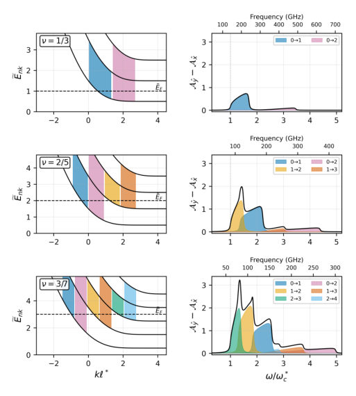
<figcaption class="paper-figure-caption"><b>Fig 3.</b> FIG. 3. Optical response of CFs for three filling fractions ν = 1/3, 2/5, and 3/7 (three positions of the CF Fermi level). Left column: Λ-level electron dispersion near the edge, with dashed line marking the normalized CF Fermi level eEF = p = 1, 2, 3 from top to bottom. Shaded regions show the phase-space windows that contribute to each transition, colored to match the corresponding features in the spectra. Right column: dimensionless absorbance difference Aˆy −Aˆx normalized by the geometric overlap factor (see the text) as a function of normalized frequency ω/ω∗ c (bottom axis) and absolute frequency in GHz (top axis) for GaAs at B = 10 T, assuming m∗ CF = 0.66 m0 [26], γ = 0.03 ω∗ c,...</figcaption>
</figure>
</div>

<p><strong>Summary.</strong> This theoretical work demonstrates how sub-terahertz optical spectroscopy can be used to selectively probe the edge states in Fractional Quantum Hall systems. By employing the Composite Fermion mean-field theory, the authors calculate characteristic absorption peaks whose frequency scale directly reveals the electron-electron interaction-induced effective mass. This offers a powerful, non-invasive optical diagnostic tool for understanding strongly correlated quantum matter.</p>
<p><strong>Why it may be interesting.</strong> This work provides a concrete, measurable optical signature (sub-THz absorption) linked directly to the interaction physics ($m_{CF}^*$) governing strongly correlated electron systems, which is highly relevant to quantum optics and many-body dynamics.</p>
<details>
<summary>Detailed structure</summary>
<p><strong>Main problem.</strong> The goal is to selectively probe and excite the edge states present in Fractional Quantum Hall (FQH) effect samples using sub-terahertz optical spectroscopy.</p>
<p><strong>Main result.</strong> The calculated edge-state absorption peaks appear in the millimeter-wave to sub-terahertz range, providing a direct optical probe of the electron-electron interaction-induced effective mass ($m_{CF}^*$).</p>
<p><strong>Method.</strong> The authors calculated the absorbance spectrum using the Composite Fermion (CF) mean-field framework, analyzing the difference between $\hat{y}$- and $\hat{x}$-polarized absorption to isolate edge contributions.</p>
<p><strong>Model / system.</strong> The system is a 2D electron gas in the FQH regime, modeled by mapping the strongly correlated problem onto an effective integer quantum Hall problem using Composite Fermions. The analysis involves solving a differential equation derived from the CF Hamiltonian.</p>
<p><strong>Key observables.</strong> CF edge-state absorption peaks (60–500 GHz at 10 T), the number of resolved peaks (counting filled $\Lambda$-levels), and the difference spectrum $A^{\hat{y}} - A^{\hat{x}}$.</p>
<p><strong>Important parameters / regimes.</strong> Filling fractions ($
u = p/(2p+1)$), magnetic field ($B=10$ T), and the CF effective mass ($m_{CF}^*$).</p>
<p><strong>Assumptions / limitations.</strong> The calculations are performed within the CF mean-field approximation, and the edge state contribution is isolated by calculating the difference spectrum $A^{\hat{y}} - A^{\hat{x}}$.</p>
<p><strong>Figures summary.</strong> Figures illustrate the CF $\Lambda$-level dispersion and transition energies near a hard-wall edge, and show the calculated dimensionless absorbance difference $A^{\hat{y}} - A^{\hat{x}}$ for various filling fractions ($
u = 1/3, 2/5, 3/7$).</p>
<p><strong>Paper structure.</strong> The paper establishes the physical problem (probing FQH edge states), details the theoretical framework (CF mean-field mapping), outlines the calculation of optical response using polarization differences, and presents the key results showing spectral fingerprints and mass determination.</p>
</details>
<details>
<summary>Abstract</summary>
<p>We show that edge states in fractional quantum Hall effect samples can be selectively probed and excited with sub-terahertz optical spectroscopy. Using the composite fermion (CF) mean-field framework, which maps the strongly correlated fractional quantum Hall problem onto an effective integer quantum Hall problem, we calculate the absorbance spectrum for the Jain sequence of filling fractions including both bulk and edge states. The CF edge-state absorption peaks appear in the millimeter-wave to sub-terahertz range, e.g., 60-500 GHz at B = 10 T in GaAs, i.e. they are blueshifted with respect to the bulk CF cyclotron frequency but are well below the integer quantum Hall cyclotron frequency scale at the same magnetic fields. The number of resolved peaks in each series of the absorption spectrum counts the filled Lambda-levels and fingerprints the fraction. Inversion symmetry breaking near the edge activates optical transitions forbidden in the bulk and enables second-order nonlinear processes in electric-dipole approximation. The absolute frequency scale of the spectrum is set by the CF effective mass, which is generated entirely by electron-electron interactions, so the absorption spectrum provides a direct optical probe of this interaction-induced mass.</p>
</details>
<p><sub><a href="#top">↑ back to top</a></sub></p>

<p><a id="paper-2608.26401"></a></p>
<h3 id="optically-induced-thermal-runaway-in-phase-change-vo2-nanostructures"><a href="http://arxiv.org/abs/2608.26401v1">Optically Induced Thermal Runaway in Phase-Change VO2 Nanostructures</a></h3>
<p><strong>Authors:</strong> Jiří Kabát, Peter Kepič, Andrea Konečná, Filip Ligmajer<br>
<strong>Type:</strong> theory · <strong>Category:</strong> statistical mechanics · <strong>PDF:</strong> <a href="https://arxiv.org/pdf/2608.26401v1">https://arxiv.org/pdf/2608.26401v1</a><br>
<strong>Analysis basis:</strong> full PDF text, analyzed in chunks
<strong>Topic relevance:</strong> <code>driven-dissipative phase transition</code> <strong>1/5</strong> · <code>non-equilibrium universality</code> <strong>1/5</strong></p>
<div class="figure-strip-hint">↔ Scroll figures horizontally</div>
<div class="paper-figures-scroll">
<figure class="paper-figure-card">
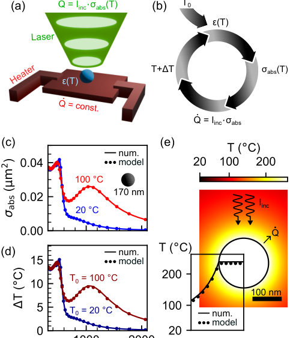
<figcaption class="paper-figure-caption"><b>Fig 1.</b> FIG. 1. (a) Schematic of the studied system featuring a VO2 nanosphere with temperature-dependent dielectric function ε(T). External heat can be provided by either a heater (ab- sorbed power ˙Q is constant) or by laser heating (absorbed power depends on the nanosphere’s temperature). (b) Scheme of the positive-feedback loop: The nanostructure with a di- electric function ε(T) at ambient temperature T0 is illumi- nated by a monochromatic plane wave of intensity Iinc and absorbs a portion of the incident field depending on its absorp- tion cross-section σabs(T). This absorption yields a dissipated power ˙Q that drives a temperature increase ∆T. The dielec- tric function is then updated to ε(T...</figcaption>
</figure>
<figure class="paper-figure-card">
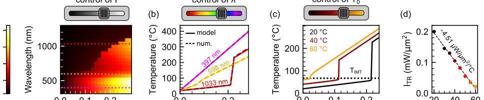
<figcaption class="paper-figure-caption"><b>Fig 2.</b> FIG. 2. (a) Parametric map of the steady-state temperature as a function of excitation wavelength of the laser and its intensity for the 170 nm nanosphere. Each point was calculated using the analytical model and the iterative cycle until the temperature converged. (b) Cross-sectional cuts of the map in (a) at three excitation wavelengths. These reveal linear heating behavior at λexc = 397 nm, minor non-linearity at λexc = 598 nm, and a pronounced step-like non-linearity at λexc = 1033 nm. Solid lines correspond to the analytical model; dashed lines are the results of numerical simulations. (c) Effect of thermal bias introduced by the heater. Preheating the nanosphere to an ambient...</figcaption>
</figure>
<figure class="paper-figure-card">
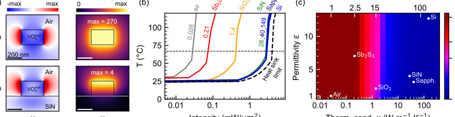
<figcaption class="paper-figure-caption"><b>Fig 3.</b> FIG. 3. Influence of the substrate on the photothermal heating of a metallic (met) VO2 nanodisc (D = 300 nm, h = 200 nm). (a) Distribution of the induced electric field for the nanodisc evaluated for λ = 1033 nm (left column) and the resulting steady- state temperature change (right column). The nanodisc is either surrounded by air (first row) or placed on a SiN substrate (second row). (b) Dependence of the steady-state temperature, averaged over the nanodisc, on the illumination intensity for the nanodisc positioned on various substrates with values of κ. (c) Map of final steady-state temperature of the nanodisc as a function of substrate’s permittivity ε and its thermal conductivity κ....</figcaption>
</figure>
<figure class="paper-figure-card">
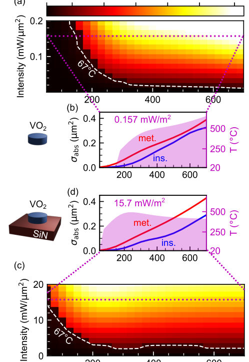
<figcaption class="paper-figure-caption"><b>Fig 4.</b> FIG. 4. Steady-state temperature of VO2 nanodiscs. (a) Calculated intensity dependence of the steady-state tempera- ture of the nanodiscs with different diameters D and fixed height 200 nm in air, calculated at excitation wavelength 1033 nm. (b) Calculated absorption cross-sections of the nan- odiscs from (a) for insulating and metallic phases of VO2 (in- creases with D) and the steady-state temperature (magenta) at Iinc (abrupt jump for nanodiscs larger than 150 nm when IMT-boosted heating occurs). (c) Same as (a) but the nan- odisc is on a SiN substrate. The intensities needed for the self-heating threshold are higher compared to those in (a). (d) Calculated absorption cross-sections of...</figcaption>
</figure>
</div>

<p><strong>Summary.</strong> This work develops an iterative multiphysics model to study thermal runaway in VO2 nanostructures undergoing a phase transition. By coupling electrodynamics and heat transfer, the authors predict that the runaway threshold is highly sensitive to external factors like ambient temperature and substrate properties. This provides crucial design principles for active photonic devices.</p>
<p><strong>Why it may be interesting.</strong> The strong, non-linear, and temperature-dependent nature of the optical absorption coefficient ($\sigma_{	ext{abs}}(T)$) driving the thermal runaway mechanism shares conceptual links with non-equilibrium phase transitions studied in statistical mechanics.</p>
<details>
<summary>Detailed structure</summary>
<p><strong>Main problem.</strong> The paper investigates optically induced thermal runaway in phase-change VO2 nanostructures, addressing the failure of existing models near sharp optical transitions.</p>
<p><strong>Main result.</strong> Thermal runaway is predicted, showing that the ignition threshold depends on wavelength, ambient temperature, and substrate; preheating significantly lowers the required optical intensity.</p>
<p><strong>Method.</strong> An iterative multiphysics framework is introduced, coupling full-wave electrodynamics with steady-state heat transfer calculations.</p>
<p><strong>Model / system.</strong> The system involves VO2 nanostructures exhibiting an insulator-metal transition (IMT) and strong temperature-dependent optical properties. The model iteratively solves for the temperature change ($\Delta T$) by coupling absorbed power ($\dot{Q}$) to heat transfer.</p>
<p><strong>Key observables.</strong> Thermal runaway behavior, required optical intensity for ignition (ITR), and steady-state temperature maps.</p>
<p><strong>Important parameters / regimes.</strong> Illumination wavelength ($\lambda_{	ext{exc}}$), incident intensity ($I_{	ext{inc}}$), ambient temperature ($T_0$), and substrate thermal conductivity ($\kappa$).</p>
<p><strong>Assumptions / limitations.</strong> The model requires iterative calculations because the change in temperature significantly alters the material's dielectric function, invalidating one-step approximations.</p>
<p><strong>Figures summary.</strong> Figures show parametric maps of steady-state temperature dependence on wavelength and intensity, confirming step-like runaway signatures. Other figures compare heating on different substrates, highlighting the dominant role of substrate thermal conductivity.</p>
<p><strong>Paper structure.</strong> The paper establishes the multiphysics framework, demonstrates the runaway effect in free-standing structures, and then systematically analyzes how the surrounding substrate (via $\kappa$ and $\epsilon$) modifies the thermal runaway threshold and steady-state temperature profiles.</p>
</details>
<details>
<summary>Abstract</summary>
<p>While thermal runaway occurs across diverse physical disciplines, its presence in subwavelength phase-change photonics remains unexplored because existing thermo-optical models break down near sharp optical transitions. Here, we introduce an iterative multiphysics framework coupling full-wave electrodynamics with heat transfer, and we discover optically induced thermal runaway in vanadium dioxide (VO2) nanostructures. The runaway switching threshold depends on the illumination wavelength, ambient temperature, and underlying substrate, with external thermal biasing significantly reducing the optical intensity required for runaway ignition. Our results push forward the modeling of sharp photothermal transitions and provide essential design principles for active metasurfaces, neuromorphic photonic devices, and nanoscale thermal management.</p>
</details>
<p><sub><a href="#top">↑ back to top</a></sub></p>

<p><a id="paper-2608.27383"></a></p>
<h3 id="scalable-simple-and-versatile-encapsulation-of-2d-materials-and-devices"><a href="http://arxiv.org/abs/2608.27383v1">Scalable, Simple, and Versatile Encapsulation of 2D Materials and Devices</a></h3>
<p><strong>Authors:</strong> Gabriel Natale, Uma Chirkova, Flávio Henriques Feres, Ran Jing, Michael Geiwitz, Wenyao Liu, Emma Low, Josh Leeman, Kyung-Mo Kim, Leslie M. Schoop, Mohamed Shehabeldin, Qiong Ma, Michael A. Susner, Pijush Bhattacharya, Genda Gu, Katherine Lee, James Hone, Mengkun Liu, Kenneth S. Burch<br>
<strong>Type:</strong> experiment · <strong>Category:</strong> other · <strong>PDF:</strong> <a href="https://arxiv.org/pdf/2608.27383v1">https://arxiv.org/pdf/2608.27383v1</a><br>
<strong>Analysis basis:</strong> full PDF text, analyzed in chunks
<strong>Topic relevance:</strong> <code>analog quantum simulation</code> <strong>1/5</strong> · <code>quantum measurements</code> <strong>1/5</strong></p>
<div class="figure-strip-hint">↔ Scroll figures horizontally</div>
<div class="paper-figures-scroll">
<figure class="paper-figure-card">
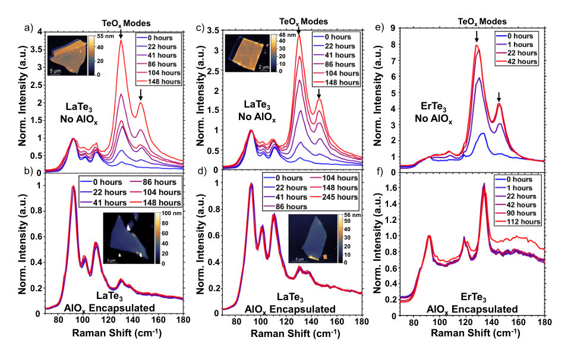
<figcaption class="paper-figure-caption"><b>Fig 1.</b> Figure 1: Evolution of thin (tflake &lt; 30 nm) LaTe3 and ErTe3 flakes with exposure to the ambient environment measured via Raman spectra normalized to the lowest energy, intrinsic phonon. The flakes without AlOx capping (a,c,e) reveal a rapid and continued enhancement of the TeOx peaks (black arrows), while the AlOx coated flakes (b,d,f) remain unchanged. Insets in a-d display the AFM topography of the flakes, revealing that encapsulated flakes remain uniform, whereas flakes without AlOx capping exhibit a rough surface and interlayer delamination.</figcaption>
</figure>
<figure class="paper-figure-card">
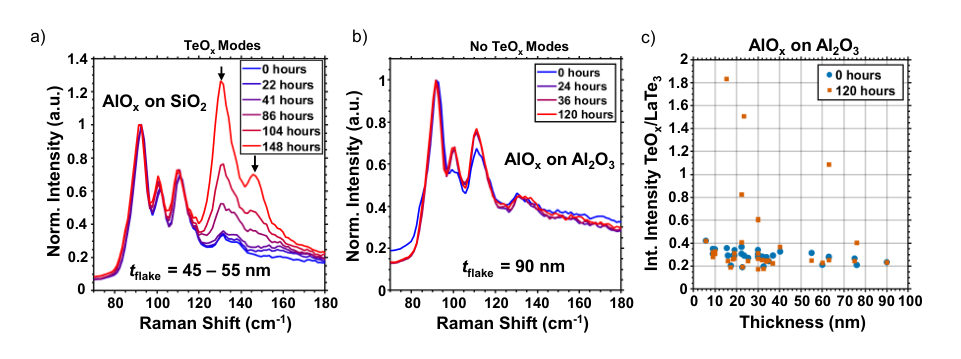
<figcaption class="paper-figure-caption"><b>Fig 2.</b> Figure 2: The impact of substrate choice on edge encapsulation quality is demonstrated by com- paring the evolution of LaTe3 Raman spectra normalized to the lowest energy phonon mode for flakes with tflake ≥45 nm on a) SiO2 and b) sapphire (Al2O3) substrates. c) Ratio of the integrated intensity of the TeOx-related mode (130 cm−1) to the lowest energy LaTe3 mode (92 cm−1) vs flake thickness for 37 measurement points across 26 unique flakes.</figcaption>
</figure>
<figure class="paper-figure-card">
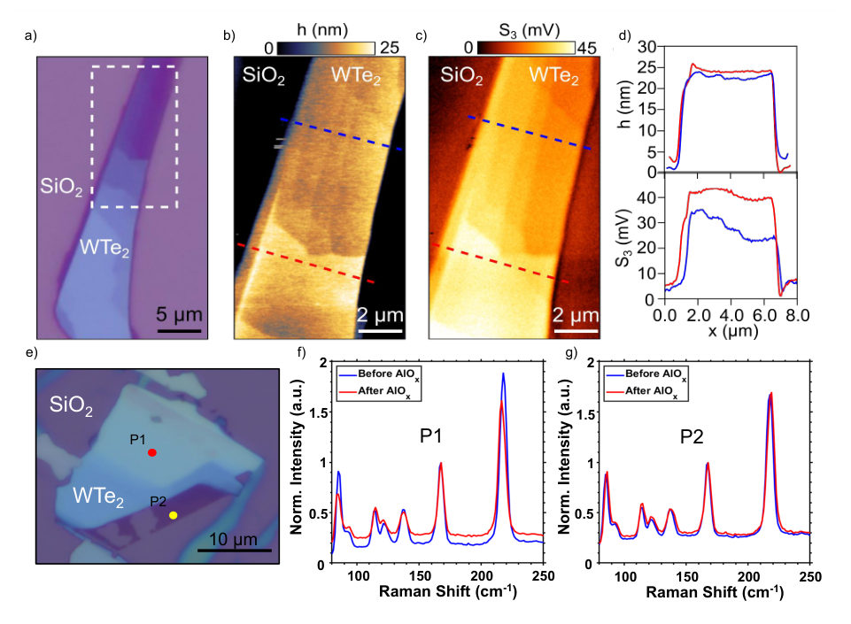
<figcaption class="paper-figure-caption"><b>Fig 3.</b> Figure 3: Protection and impact of AlOx deposition on WTe2. a) Optical microscopy image of the WTe2 flake on SiO2 substrate after AlOx deposition. b) AFM/topography image and c) 1550 cm−1 s-SNOM image performed in the white dashed highlighted area. The blue and red dashed lines indicate the spatial profiles displayed in d) AFM topography (top) and near-field optical image (bottom). e) Optical microscopy image of an exfoliated WTe2 flake on SiO2 substrate after AlOx deposition with point spectra locations marked in thick (P1) and thin (P2) regions. f) Thick and g) thin region WTe2 Raman spectra normalized to the peak located at 167 cm−1, plotted before (blue) and after (red) AlOx deposition.</figcaption>
</figure>
<figure class="paper-figure-card">
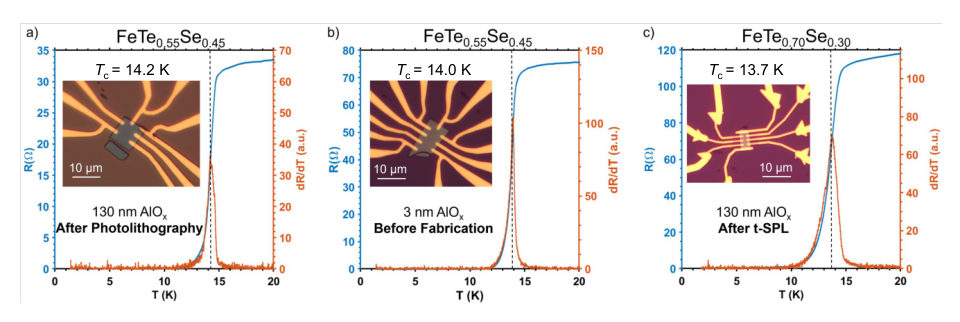
<figcaption class="paper-figure-caption"><b>Fig 4.</b> Figure 4: Resistance (blue) and dR/dT (red) vs temperature with device images shown in the inset for a) FeTe0.55Se0.45 fabricated using photolithography followed by encapsulation b) FeTe0.55Se0.45 fabricated directly through a 3 nm sacrificial AlOx layer without subsequent thick encapsulation and c) FeTe0.70Se0.30 fabricated using t-SPL followed by encapsulation. Dashed lines mark the peak position in dR/dT, and thus Tc.</figcaption>
</figure>
</div>

<p><strong>Summary.</strong> This work introduces e-beam evaporated aluminum oxide (AlOx) as a superior, scalable encapsulation method for highly air-sensitive 2D quantum materials. By demonstrating that AlOx preserves the electronic and optical properties of materials like WTe2 and superconducting FeTeSe, the authors resolve a major bottleneck in fabricating functional quantum devices.</p>
<p><strong>Why it may be interesting.</strong> While primarily materials science, the ability to precisely control the environment and interface chemistry of quantum materials using a scalable deposition technique is crucial for realizing any quantum device, linking directly to open quantum system engineering.</p>
<details>
<summary>Detailed structure</summary>
<p><strong>Main problem.</strong> Air-sensitive 2D materials are difficult to integrate into functional devices due to environmental degradation and complex fabrication requirements.</p>
<p><strong>Main result.</strong> Electron-beam evaporated aluminum oxide (AlOx) serves as a scalable, simple encapsulation layer that preserves the intrinsic electronic and optical properties of various 2D materials, enabling straightforward device fabrication.</p>
<p><strong>Method.</strong> The authors used e-beam evaporation to deposit AlOx over 2D materials and characterized the results using Raman spectroscopy, s-SNOM, and electrical transport measurements.</p>
<p><strong>Model / system.</strong> The study focuses on several 2D materials, including rare-earth tritellurides (RTe3), semimetallic WTe2, and superconducting iron-based compounds (FeTe_xSe_{1-x}). These materials are tested both in their pristine state and after encapsulation.</p>
<p><strong>Key observables.</strong> Oxidation peaks (TeOx) in Raman spectra, plasmonic response contrast via s-SNOM, superconducting critical temperature (Tc) from R vs T measurements, and preservation of intrinsic optical/electronic properties.</p>
<p><strong>Important parameters / regimes.</strong> AlOx thickness (e.g., 3 nm, 130 nm), flake thickness, temperature range (low T for superconductivity), and substrate type (SiO2 vs. Al2O3).</p>
<p><strong>Assumptions / limitations.</strong> The method overcomes the traditional trade-off between effective encapsulation and simple, scalable device fabrication procedures.</p>
<p><strong>Figures summary.</strong> Figures show Raman spectra comparing encapsulated vs. uncapped flakes (demonstrating oxidation suppression), s-SNOM images showing preserved optical contrast through AlOx, and R vs T curves confirming superconductivity in encapsulated devices.</p>
<p><strong>Paper structure.</strong> The paper systematically demonstrates the protective capability of AlOx using RTe3 (Raman analysis), then validates its compatibility with optical probing (s-SNOM on WTe2), and finally proves its utility in device fabrication by maintaining superconductivity in FeTeSe.</p>
</details>
<details>
<summary>Abstract</summary>
<p>Air-sensitive 2D materials present a fundamental challenge for device integration. Encapsulation is often required to preserve intrinsic properties, yet conventional protection strategies often fail for thicker layers and complicate fabrication. Here, we demonstrate that electron-beam (e-beam) evaporated aluminum oxide ($\mathrm{AlO}_x$) serves as both an effective encapsulation layer and a platform for direct device fabrication. Unlike transfer-based approaches, this scalable method is compatible with thicker flakes and full device or wafer coverage. It requires no stacking procedures and enables contacts without post-encapsulation etching. Using rare-earth tritellurides ($\mathrm{RTe}_3$, R = La, Er), semimetallic $\mathrm{WTe}_2$, and superconducting $\mathrm{FeTe}_x\mathrm{Se}_{1-x}$, we show that $\mathrm{AlO}_x$ suppresses oxidation and preserves intrinsic optical and electronic properties. We establish substrate-dependent optimization of encapsulation across a range of flake thicknesses, demonstrate that ultrathin $\mathrm{AlO}_x$ preserves $\mathrm{WTe}_2$'s plasmonic response and maintains superconducting performance in $\mathrm{FeTe}_x\mathrm{Se}_{1-x}$. Thus we overcome the longstanding tradeoff between encapsulation and straightforward device fabrication in fragile quantum materials.</p>
</details>
<p><sub><a href="#top">↑ back to top</a></sub></p>

<p><a id="paper-2608.27002"></a></p>
<h3 id="spin-preservation-in-screw-symmetric-molecules"><a href="http://arxiv.org/abs/2608.27002v1">Spin preservation in screw-symmetric molecules</a></h3>
<p><strong>Authors:</strong> Jonas Bloch, Fedor Baranov, Maxim Breitkreiz<br>
<strong>Type:</strong> theory · <strong>Category:</strong> other · <strong>PDF:</strong> <a href="https://arxiv.org/pdf/2608.27002v1">https://arxiv.org/pdf/2608.27002v1</a><br>
<strong>Analysis basis:</strong> full PDF text, analyzed in chunks
<strong>Topic relevance:</strong> <code>Keldysh / 2PI / non-Gaussian methods</code> <strong>1/5</strong> · <code>methods for driven-dissipative</code> <strong>1/5</strong></p>
<div class="figure-strip-hint">↔ Scroll figures horizontally</div>
<div class="paper-figures-scroll">
<figure class="paper-figure-card">
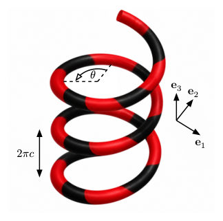
<figcaption class="paper-figure-caption"><b>Fig 1.</b> FIG. 1: Schematic illustration of a screw-symmetric he- lical object with screw angle θ = π/2, chirality χ = −1, and pitch 2πc, encoded in the periodic color texture al- ternating between black and red.</figcaption>
</figure>
<figure class="paper-figure-card">
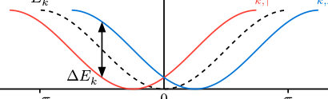
<figcaption class="paper-figure-caption"><b>Fig 2.</b> FIG. 2: Schematic illustration of the spin-dependent band shift by χθ arising from the screw geometry (here, χ = −1 and θ = π/2). A strong energy splitting, ∆Ek = Ek,↑−Ek,↓̸= 0 arises for most values of k. The only values of k with a weak splitting correspond to the intersection points of the curves for Ek,↑and Ek,↓.</figcaption>
</figure>
<figure class="paper-figure-card">
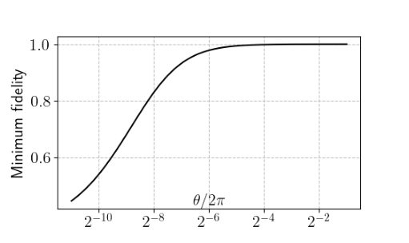
<figcaption class="paper-figure-caption"><b>Fig 3.</b> FIG. 3: Spin fidelity F computed at k = π/3 and initial spin ↑. One observes a loss in fidelity when θ = 2π/m de- creases, as the molecule approaches a continuum of ions. Here, t0 = 1 eV, λ = t0/100, ξ0 = −(1, 1, 1)T / √</figcaption>
</figure>
<figure class="paper-figure-card">
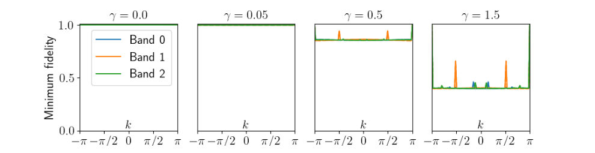
<figcaption class="paper-figure-caption"><b>Fig 4.</b> FIG. 4: Spin fidelity F computed against k with initial spin ↑for different values of γ, using F =</figcaption>
</figure>
<figure class="paper-figure-card">
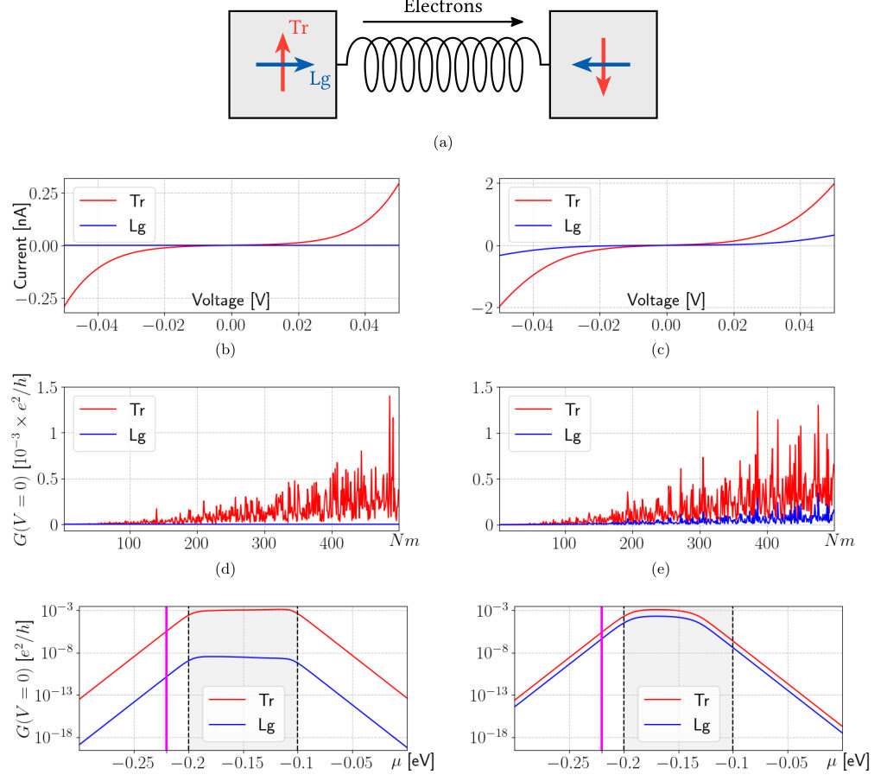
<figcaption class="paper-figure-caption"><b>Fig 5.</b> FIG. 5: Spin-valve transport simulations for a long molecule with screw symmetry (left) and weakly broken screw symmetry (right). (a) Sketch of an AP spin-valve setup. (b,c), (d,e), and (f,g) Current as a function of bias voltage, zero-bias conductance as a function of molecule length, and chemical potential, respectively, for a screw-symmetric molecule, γ = 0 (left) and weakly broken screw symmetry, γ = 0.25 (right). In (b), the Lg current does not exceed 10−4 nA. In (f) and (g), the vertical axis is in logscale, the highlighted area indicates the conducting regime (where bands of the molecule and that of the leads overlap), and the solid purple vertical line indicates the chemical...</figcaption>
</figure>
</div>

<p><strong>Summary.</strong> This theoretical study demonstrates that molecules possessing discrete screw symmetry can dramatically enhance spin preservation during electron transport. This effect, which surpasses predictions based solely on spin-orbit coupling, is quantified by calculating spin fidelity and predicted to manifest as a strong, measurable magnetoresistance in a spin-valve device.</p>
<p><strong>Why it may be interesting.</strong> This work directly addresses spin-dependent transport in molecular systems, linking topological/geometric symmetries (screw symmetry) to robust quantum phenomena (spin preservation), which is highly relevant to molecular electronics and quantum spintronics.</p>
<details>
<summary>Detailed structure</summary>
<p><strong>Main problem.</strong> The paper investigates how spin polarization is preserved during electronic transport through long molecular structures, particularly focusing on the role of discrete screw symmetry.</p>
<p><strong>Main result.</strong> Screw symmetry significantly enhances spin preservation far beyond the timescale predicted by spin-orbit coupling, leading to a measurable, symmetry-protected magnetoresistance signature in a spin-valve setup.</p>
<p><strong>Method.</strong> The analysis employs the Bloch Hamiltonian formalism, analyzing spin-flip probabilities via perturbation theory and calculating spin fidelity over time.</p>
<p><strong>Model / system.</strong> The system is modeled using tight-binding Hamiltonians for molecules exhibiting discrete screw symmetry. The analysis is extended to a spin-valve setup connecting the molecule to two magnetic leads.</p>
<p><strong>Key observables.</strong> Spin fidelity (F), zero-bias conductance (G(V=0)), and the ratio of currents in different magnetic alignments (e.g., $ ext{Tr}/    ext{Lg}$).</p>
<p><strong>Important parameters / regimes.</strong> Chirality ($\chi$), pitch ($c$), screw angle ($  heta$), and the degree of symmetry breaking ($\gamma$).</p>
<p><strong>Assumptions / limitations.</strong> The analysis assumes the spin-splitting energy remains small compared to other energy scales, and that phonon scattering is negligible compared to hopping amplitudes.</p>
<p><strong>Figures summary.</strong> Figures illustrate the spin-dependent band shift ($\Delta E_k$) due to screw geometry, the decay of spin fidelity as symmetry is broken, and the resulting spin-valve current-voltage characteristics.</p>
<p><strong>Paper structure.</strong> The paper progresses from establishing the theoretical framework using the screw symmetry operator and Bloch Hamiltonian, to testing the effect using tight-binding models, and finally demonstrating the physical consequence via transport simulations in a spin-valve setup.</p>
</details>
<details>
<summary>Abstract</summary>
<p>In electronic transport through long molecules, spin is expected to be preserved only when the dwell time is much shorter than the characteristic spin-mixing timescale $\hbar/Δ$, where $Δ$ is the magnitude of a spin-dependent potential, such as spin-orbit coupling. We show that, in molecules featuring discrete screw symmetry, spin preservation can be enhanced far beyond this timescale owing to strong spin separation in quasi-momentum. This spin fidelity in long molecules is consistent with chirality-induced spin selectivity (CISS), suggesting spin-dependent transport in long, chiral molecules with amplified spin-splitting mechanisms. We provide analytical derivation of the enhanced spin preservation and test it on tight-binding models, which confirm that the effect gradually weakens when the screw symmetry is broken or changes from discrete to continuous. Furthermore, we perform transport simulations to show that a strong magnetoresistance trace of symmetry-protected spin fidelity emerges in a spin-valve setup with two magnetic leads, which we propose as an experimentally accessible signature.</p>
</details>
<p><sub><a href="#top">↑ back to top</a></sub></p>

<p><a id="paper-2608.27013"></a></p>
<h3 id="atomic-scale-composition-of-the-ternary-iii-v-semiconductor-algasb-visualized-by-cross-sectional-scanning-tunneling-microscopy"><a href="http://arxiv.org/abs/2608.27013v1">Atomic-scale composition of the ternary III-V semiconductor (Al,Ga)Sb visualized by cross-sectional scanning tunneling microscopy</a></h3>
<p><strong>Authors:</strong> Hitesh Kumar, Vladimir Kaganer, Zijin Lei, Rüdiger Schott, Werner Wegscheider, Stefan Fölsch<br>
<strong>Type:</strong> experiment · <strong>Category:</strong> other · <strong>PDF:</strong> <a href="https://arxiv.org/pdf/2608.27013v1">https://arxiv.org/pdf/2608.27013v1</a><br>
<strong>Analysis basis:</strong> full PDF text, analyzed in chunks
<strong>Topic relevance:</strong> <code>analog quantum simulation</code> <strong>1/5</strong></p>
<div class="figure-strip-hint">↔ Scroll figures horizontally</div>
<div class="paper-figures-scroll">
<figure class="paper-figure-card">
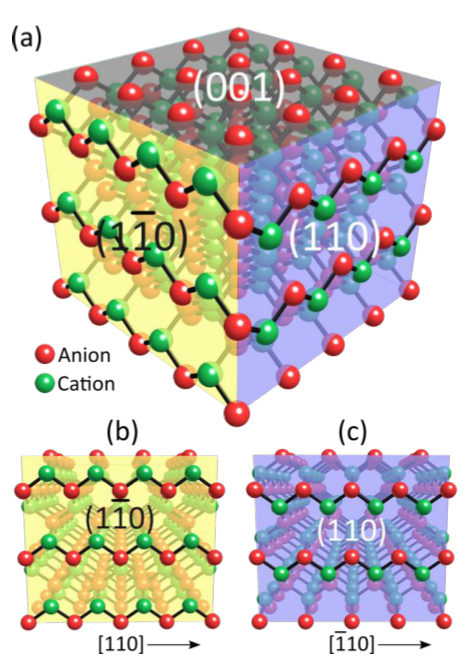
<figcaption class="paper-figure-caption"><b>Fig 1.</b> Figure 1(a) illustrates the relative orientations between the (001) growth plane and the (11̅0) and</figcaption>
</figure>
<figure class="paper-figure-card">
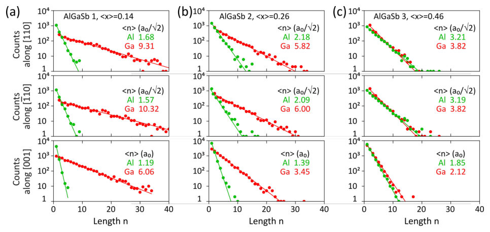
<figcaption class="paper-figure-caption"><b>Fig 2.</b> Fig. 5. (a) Total counts plotted on logarithmic scale versus aggregate length n along [110] (upper plot), [1̅10] (center), and [001] (bottom) obtained for the first (Al,Ga)Sb layer; no Ga monomers are observed along the 110 in-plane directions (upper and center plot). Lines in each plot represent geometric distributions with the decay determined by the observed mean length values n; the same information for the second layer is shown in (b) and for the third layer in (c). The count statistics in panels (a) to (c) was extracted from a total of forty-two individual images each including 95 × 34 cation sublattice sites (along [110]/[1̅10] and [001]).</figcaption>
</figure>
</div>

<p><strong>Summary.</strong> This work uses cross-sectional STM to examine the atomic arrangement in (Al,Ga)Sb semiconductors. By directly counting atoms and analyzing electronic contrast, the researchers determined that the cation mixing is statistically random. This finding suggests the material possesses remarkable atomic-level homogeneity, consistent with either ideal mixing or weak, non-anisotropic interactions.</p>
<p><strong>Why it may be interesting.</strong> While primarily materials science, the analysis of local atomic order and the comparison to theoretical models (random vs. correlated) touches upon concepts of quenched disorder and local energy minimization, which are relevant to understanding complex many-body systems.</p>
<details>
<summary>Detailed structure</summary>
<p><strong>Main problem.</strong> The study investigates the atomic-scale composition and cation mixing behavior within the ternary III-V semiconductor (Al,Ga)Sb.</p>
<p><strong>Main result.</strong> The cation distribution was found to be statistically random both along the growth direction and within the growth plane, indicating an exceptionally high degree of atomic-level homogeneity.</p>
<p><strong>Method.</strong> Cross-sectional Scanning Tunneling Microscopy (XSTM) was employed at 5 K, utilizing electronic contrast to perform direct atom counting on cleaved surfaces.</p>
<p><strong>Model / system.</strong> The physical system is the (Al,Ga)Sb alloy grown by Molecular Beam Epitaxy (MBE). Analysis involves comparing experimental cation statistics against theoretical models, such as random occupancy or Markov-chain models accounting for strain-mediated interactions.</p>
<p><strong>Key observables.</strong> Cation distribution statistics (randomness vs. correlation), mean number of consecutive cations of the same type ($\langle n 
angle$), and electronic contrast between Al and Ga surface cations.</p>
<p><strong>Important parameters / regimes.</strong> Temperature (5 K), semiconductor composition (Al/Ga ratio), and crystallographic directions ($\langle 110 
angle$, $[001]$).</p>
<p><strong>Assumptions / limitations.</strong> The observed contrast is attributed to electronic differences (dangling-bond states) between Al and Ga atoms, and that statistical averaging over subsurface cations restores isotropy.</p>
<p><strong>Figures summary.</strong> Figures illustrate the relative orientations of cleavage planes, show cross-sections revealing chemical contrast between Al and Ga, and compare measured mean cation lengths ($\langle n 
angle$) against theoretical predictions from random and correlated models.</p>
<p><strong>Paper structure.</strong> The paper progresses by detailing the experimental setup (XSTM on specific planes), presenting the direct atom counting results, developing theoretical models (random vs. correlated mixing), and concluding by comparing the measured statistics against these models to establish the degree of homogeneity.</p>
</details>
<details>
<summary>Abstract</summary>
<p>Cross-sectional scanning tunneling microscopy at 5 K is used to investigate cation mixing in (Al,Ga)Sb layers grown by molecular beam epitaxy, via direct atom counting at the (1-10) and (110) cleavage planes. Electronic contrast between Al and Ga surface cations enables statistical analysis of the metal sublattice along the non-equivalent &lt;110&gt; directions within the zincblende (001) surface and along the [001] growth direction. The cation distribution is found to be random both along the growth direction and within the growth plane, with no evidence of long-range order or anisotropic growth kinetics; notably, the mean numbers of consecutive cations of the same type along the two in-plane directions are equal, possibly due to statistical averaging over randomly distributed subsurface cations. The results are compatible with either strain-mediated interactions during cation incorporation at the growth front or ideal, uncorrelated cation mixing. Overall, the examined (Al,Ga)Sb alloy shows an exceptionally high degree of atomic-level homogeneity.</p>
</details>
<p><sub><a href="#top">↑ back to top</a></sub></p>

<p><a id="paper-2608.27349"></a></p>
<h3 id="high-temperature-superconductivity-of-the-fe-se-h-compound"><a href="http://arxiv.org/abs/2608.27349v1">High-Temperature Superconductivity of the Fe-Se-H compound</a></h3>
<p><strong>Authors:</strong> S. I. Bondarenko, A. A. Prokhorov, N. N. Galtsov, V. P. Timofeev, V. P. Koverya, I. S. Bondarenko, A. V. Krevsun<br>
<strong>Type:</strong> experiment · <strong>Category:</strong> strongly correlated electrons · <strong>PDF:</strong> <a href="https://arxiv.org/pdf/2608.27349v1">https://arxiv.org/pdf/2608.27349v1</a><br>
<strong>Analysis basis:</strong> full PDF text, analyzed in chunks
<strong>Topic relevance:</strong> <code>quantum measurements</code> <strong>1/5</strong></p>
<div class="figure-strip-hint">↔ Scroll figures horizontally</div>
<div class="paper-figures-scroll">
<figure class="paper-figure-card">
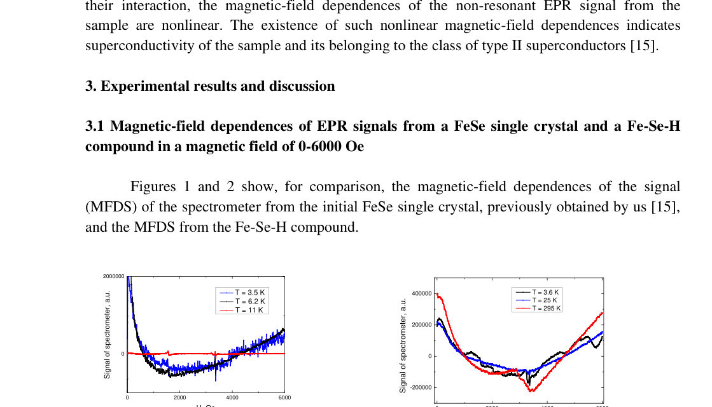
<figcaption class="paper-figure-caption"><b>Fig 1.</b> Fig. 1. MFDS from a single crystal FeSe at temperatures 3.5 K, 6.2 K, 11 K.</figcaption>
</figure>
<figure class="paper-figure-card">
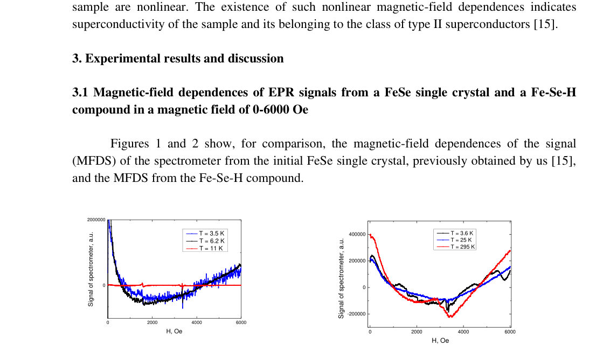
<figcaption class="paper-figure-caption"><b>Fig 2.</b> Fig. 2. МFDS from the compound Fe-Se-Н at temperatures 3.6 K, 25 K, 295 K. The original FeSe single crystal is a type-II superconductor. The typical shape of its U- shaped MFDS (Fig. 1) corresponds to its mixed superconducting state [15]. These dependences</figcaption>
</figure>
<figure class="paper-figure-card">

<figcaption class="paper-figure-caption"><b>Fig 3.</b> Fig. 3. MFDS of the Fe-Se-H compound at zero and weak magnetic field up to 30 Oe at T=3.6-25 K.</figcaption>
</figure>
<figure class="paper-figure-card">

<figcaption class="paper-figure-caption"><b>Fig 4.</b> Fig. 4. MFDS of a FeSe single crystal at T = 3.5-7.8 K [15].</figcaption>
</figure>
<figure class="paper-figure-card">

<figcaption class="paper-figure-caption"><b>Fig 5.</b> Fig. 5. MFDS powder in a field of 0-30 Oe. Fig. 6. MFDS powder in a field of 0-120 Oe.</figcaption>
</figure>
</div>

<p><strong>Summary.</strong> This experimental study investigates the superconducting properties of the $   ext{Fe-Se-H}$ compound using EPR spectroscopy. By measuring magnetic field dependence at room temperature (295 K), the authors provide evidence for superconductivity and extrapolate the critical temperature to significantly higher values. The findings are significant for materials science due to the potential for room-temperature superconductivity.</p>
<p><strong>Why it may be interesting.</strong> The work directly addresses high-$T_c$ superconductivity, a major topic in condensed matter physics, using advanced spectroscopic techniques to probe superconducting vortex dynamics.</p>
<details>
<summary>Detailed structure</summary>
<p><strong>Main problem.</strong> The primary goal is to establish evidence for high-temperature superconductivity in the Fe-Se-H compound, aiming to increase the critical temperature ($T_c$) towards room temperature at normal pressure.</p>
<p><strong>Main result.</strong> The $  ext{Fe-Se-H}$ compound exhibits superconductivity at normal pressure, confirmed by characteristic U-shaped magnetic-field dependences and quasi-periodic EPR signals observed up to 295 K.</p>
<p><strong>Method.</strong> The study utilizes Electron Paramagnetic Resonance (EPR) spectroscopy to measure the dependence of microwave power absorption on magnetic field and temperature.</p>
<p><strong>Model / system.</strong> The physical system is the $    ext{Fe-Se-H}$ compound, formed by hydrogen diffusion into an $  ext{FeSe}$ single crystal. Measurements are performed on both powdered and single-crystal samples.</p>
<p><strong>Key observables.</strong> The derivative of microwave power absorption ($    ext{dP/dH}$), U-shaped magnetic-field dependences (MFDS), and quasi-periodic oscillations in the EPR signal.</p>
<p><strong>Important parameters / regimes.</strong> Temperatures ranging from 3.6 K to 295 K; magnetic fields up to 6000 Oe; the calculated critical temperature extrapolation suggests $T_c \approx 340 	ext{ K}$.</p>
<p><strong>Assumptions / limitations.</strong> The quasi-periodic variations in the EPR signal are attributed to the presence of Abrikosov vortices, and the vortex area is approximated by $S_0 \approx \pi [\lambda(T)]^2/4$.</p>
<p><strong>Figures summary.</strong> Figures show the U-shaped MFDS for both the single crystal $   ext{FeSe}$ and the $    ext{Fe-Se-H}$ powder at various temperatures, and high-resolution EPR signals demonstrating quasi-periodicity.</p>
<p><strong>Paper structure.</strong> The paper presents measurements of microwave power absorption using EPR spectroscopy on $  ext{Fe-Se-H}$ across a wide temperature range. Evidence for superconductivity is drawn from the U-shaped MFDS and the analysis of quasi-periodic signals, leading to an extrapolation of the critical temperature.</p>
</details>
<details>
<summary>Abstract</summary>
<p>Using an EPR spectrometer, the dependences of microwave power absorption on magnetic field up to 6000 Oe were measured at temperatures of 3.6-25 K and 295 K in a powdered compound Fe-Se-H, obtained by thermal diffusion of hydrogen into a FeSe single crystal with a critical temperature of 8 K. The shape of the dependences and the analysis of the measurement results confirm the superconductivity of the Fe-Se-H compound at normal pressure, both at temperatures of 3.6-25 K and at 295 K, i.e., at room temperature.</p>
</details>
<p><sub><a href="#top">↑ back to top</a></sub></p>

<p><a id="paper-2608.26855"></a></p>
<h3 id="self-selective-growth-of-gaas1-xbix-on-gaas-zinc-blendewurtzite-nanowire-heterostructures"><a href="http://arxiv.org/abs/2608.26855v1">Self-selective growth of GaAs1-xBix on GaAs zinc blende/wurtzite nanowire heterostructures</a></h3>
<p><strong>Authors:</strong> Rohit Yadav, Sebastian Lehmann, Vidar Flodgren, Evangelos Golias, Alexei Zakharov, Kimberly A. Dick, Anders Mikkelsen, Rainer Timm<br>
<strong>Type:</strong> experiment · <strong>Category:</strong> other · <strong>PDF:</strong> <a href="https://arxiv.org/pdf/2608.26855v1">https://arxiv.org/pdf/2608.26855v1</a><br>
<strong>Analysis basis:</strong> full PDF text, analyzed in chunks
<strong>Topic relevance:</strong> <code>quantum measurements</code> <strong>1/5</strong></p>
<div class="figure-strip-hint">↔ Scroll figures horizontally</div>
<div class="paper-figures-scroll">
<figure class="paper-figure-card">

<figcaption class="paper-figure-caption"><b>Fig 1.</b> Figure 1 (a) Schematic representation of the GaBi/GaAs NW growth with Zb and Wz heterostructure; SEM image of (b) grown NWs on the growth substrate; (c) a transferred NW on the patterned Si substrate for XPEEM measurement, color coded for identifying heterostructures, red for Wz and blue for Zb.</figcaption>
</figure>
<figure class="paper-figure-card">

<figcaption class="paper-figure-caption"><b>Fig 2.</b> Figure 2 XPEEM (a) Bi 5d, (c) Ga 3d, and (e) As 3d core-level maps of the same NW, and corresponding (b) Bi 5d5/2, (d) Ga 3d, and (f) As 3d core-level spectra, extracted from series of XPEEM maps with slightly varying BE, for different color coded regions in (a,c,e) corresponding to the Wz and Zb segments of the NW. The photon energy used for XPEEM mapping is 80 eV. The NW growth structure is illustrated in Fig. 1.</figcaption>
</figure>
<figure class="paper-figure-card">

<figcaption class="paper-figure-caption"><b>Fig 3.</b> Figure 3 (a) Combined Ga 3d and Bi 5d core-level spectra obtained at the same positions as those shown in Fig. 2(a,c), extracted from a series of XPEEM maps, including those shown in (b,c), covering a larger energy range. (b) Bi 5d and (c) Ga 3d XPEEM maps. XPEEM data were obtained after annealing at a higher temperature (300 °C), at 80 eV photon energy.</figcaption>
</figure>
<figure class="paper-figure-card">

<figcaption class="paper-figure-caption"><b>Fig 4.</b> Figure 4 Fitted Ga 3d core-level spectra corresponding to (a) the Zb-1 segment and (b) the Wz-1 segment shown in Fig. 2d, the intensity of the Ga-oxide component (blue peak) is smaller at the Zb and larger at the Wz segment.</figcaption>
</figure>
</div>

<p><strong>Summary.</strong> This work demonstrates the controlled, site-selective growth of $  ext{GaAs}_{1-x} ext{Bi}_x$ shells on $  ext{GaAs}$ nanowire heterostructures containing alternating zinc blende and wurtzite phases. Using advanced electron microscopy, the researchers found that bismuth incorporation strongly depends on the crystal phase, favoring the Zb segments through an anion-exchange mechanism. This provides a pathway for engineering quantum materials with tailored functionalities.</p>
<p><strong>Why it may be interesting.</strong> While the focus is on solid-state materials science, the precise control over crystal phase and atomic-scale material deposition is crucial for realizing novel quantum devices, linking to concepts of engineered quantum interfaces.</p>
<details>
<summary>Detailed structure</summary>
<p><strong>Main problem.</strong> The study aims to engineer quantum materials by achieving site-selective nanostructure growth and material incorporation at the atomic scale.</p>
<p><strong>Main result.</strong> Bi incorporation into GaAs nanowires is found to be crystal-phase-dependent, favoring the zinc blende (Zb) segments via an anion-exchange process, while the wurtzite (Wz) segments show higher susceptibility to oxidation.</p>
<p><strong>Method.</strong> The research utilizes X-ray photoemission electron microscopy (XPEEM) and X-ray Photoelectron Spectroscopy (XPS) to map elemental distribution and local chemical bonding across the heterostructure.</p>
<p><strong>Model / system.</strong> The physical system consists of GaAs nanowires (NWs) with an axial heterostructure alternating between zinc blende (Zb) and wurtzite (Wz) crystal phases, which are used as templates for overgrowth.</p>
<p><strong>Key observables.</strong> Elemental distribution ($  ext{Bi } 5d$, $ ext{Ga } 3d$, $ ext{As } 3d$), local chemical bonding, and crystal-phase-dependent Bi incorporation ratios.</p>
<p><strong>Important parameters / regimes.</strong> The study highlights the difference in incorporation behavior between the Zb and Wz facets, and the resulting difference in oxidation susceptibility.</p>
<p><strong>Assumptions / limitations.</strong> The analysis relies on the assumption that the observed differences in elemental signals reflect distinct chemical incorporation mechanisms (anion exchange vs. direct growth).</p>
<p><strong>Figures summary.</strong> Figures show schematic representations of the NW growth, SEM images of the grown structures, and PEEM maps illustrating the spatial distribution of Bi and Ga signals across the Zb/Wz segments.</p>
<p><strong>Paper structure.</strong> The paper follows a structure of establishing the need for site-selective growth, detailing the experimental setup using NW templates, presenting XPEEM/XPS data comparing Zb and Wz segments, and concluding with the mechanism of Bi incorporation.</p>
</details>
<details>
<summary>Abstract</summary>
<p>Site-selective nanostructure growth and material incorporation at the atomic scale offer a promising pathway for engineering quantum materials and nanodevices. Here, GaAs nanowires (NWs) with an axial heterostructure of alternating zinc blende (Zb) and wurtzite (Wz) crystal phases are employed as templates for site-selective Ga and Bi overgrowth. Using X-ray photoemission electron microscopy (XPEEM) with nanoscale spatial resolution, we map elemental distribution and local chemical bonding to reveal the incorporation behavior of Bi atoms in {110} Zb and {11-20} Wz facets. Bi incorporation proceeds through an anion-exchange process, where Bi atoms replace As, forming local Ga-Bi bonds and producing a thin GaAs1-xBix shell. We observe crystal-phase-dependent Bi incorporation, with higher Bi concentration in the Zb segments than in the neighboring Wz segments within the same NW. Furthermore, the Zb segment with higher Bi content exhibits reduced susceptibility to oxidation compared with the Wz segment, resulting in increased Ga-oxide in the Wz surfaces. This study highlights GaAs NW Zb/Wz heterostructures as a template for controlled growth of GaBi and GaAs1-xBix nanostructures with tailored functionalities for quantum applications</p>
</details>
<p><sub><a href="#top">↑ back to top</a></sub></p>
<h3 id="other-secondary-papers-5">Other secondary papers (5)</h3>
<details>
<summary>Show other secondary papers</summary>

<p><a id="paper-2608.26562"></a></p>
<h3 id="beyond-geometric-symmetry-broadband-linear-relations-in-wave-scattering"><a href="http://arxiv.org/abs/2608.26562v1">Beyond geometric symmetry: Broadband linear relations in wave scattering</a></h3>
<p><strong>Authors:</strong> Malte Röntgen, Sucui Luo, Xuelong Chen, Chenyu Zhang, Ruotao Ye, Tianshu Jiang, Wenlong Gao<br>
<strong>Type:</strong> both · <strong>Category:</strong> other · <strong>PDF:</strong> <a href="https://arxiv.org/pdf/2608.26562v1">https://arxiv.org/pdf/2608.26562v1</a><br>
<strong>Analysis basis:</strong> full PDF text, analyzed in chunks</p>
<div class="figure-strip-hint">↔ Scroll figures horizontally</div>
<div class="paper-figures-scroll">
<figure class="paper-figure-card">

<figcaption class="paper-figure-caption"><b>Fig 1.</b> FIG. 1. (a) Simple resonator, formed by three coaxial cables. Left panel: Reflection symmetric choice of ZL = ZR, right panel: Choosing ZL = 0 breaks geometric symmetry, but in- duces a non-geometric symmetry (see text for details). The (non-)geometric symmetry induces relations on both eigen- modes and scattering parameters (c), depicted graphically in (b1), (b2), and (d1), (d2), respectively. In (b1), (b2), lines colours red and purple are used to mark modes with positive and negative (point-wise scaled) parity, respectively.</figcaption>
</figure>
<figure class="paper-figure-card">

<figcaption class="paper-figure-caption"><b>Fig 2.</b> FIG. 2. Graph representation of different transmission line networks with non-geometric symmetries and thus non-trivial relations between scattering parameters when probing the network via the red-marked junctions a, b, c. Lines represent coaxial cables of length l or 2l. Grey circles denote stubs, with termination resistance indicated (0 for short-circuit, ∞ for open-circuit, Z0 for matched termination). White and red circles denote junctions, with the important junctions a, b, c marked in red.</figcaption>
</figure>
<figure class="paper-figure-card">

<figcaption class="paper-figure-caption"><b>Fig 3.</b> FIG. 3. Experimental verification of the broadband linear scattering relation. (a) A photo of the experimental transmis- sion line network for the model in Fig. 1(a). (b) Experimen- tally measured relationship between Re(ra−rb) and Re(t). (c) Frequency dependence of the residual |ra −rb + 2t|. (d)–(f) The same plots as in (a)–(c), but for the model in Fig. 2(d).</figcaption>
</figure>
</div>
<p><strong>Summary.</strong> This work introduces a method to find novel, broadband linear relations in wave scattering parameters that go beyond standard symmetries like reciprocity. By analyzing the effective Hamiltonian of waveguide networks, the authors show that the existence of a non-geometric symmetry guarantees such a linear relationship. This principle is demonstrated both theoretically and experimentally using coaxial cables.</p>
<p><strong>Why it may be interesting.</strong> The methodology of finding hidden, broadband symmetries in the effective Hamiltonian to predict linear relations in the scattering matrix is a powerful tool for designing novel wave devices, bridging concepts from symmetry theory to applied electromagnetics and photonics.</p>
<details>
<summary>Detailed structure</summary>
<p><strong>Main problem.</strong> To identify and utilize novel, broadband, linear relations between wave scattering parameters that cannot be derived from conventional physical symmetries like reciprocity or geometric symmetry.</p>
<p><strong>Main result.</strong> The existence of a non-geometric symmetry, characterized by a commuting operator Q, guarantees the existence of a broadband linear relation between scattering parameters, which was experimentally verified.</p>
<p><strong>Method.</strong> The analysis involves deriving an effective Hamiltonian for wave scattering in waveguide networks and imposing the condition that this Hamiltonian commutes with a symmetry operator Q across a broad frequency range.</p>
<p><strong>Model / system.</strong> The primary model is wave scattering in waveguide networks, implemented using coaxial cables, which are mathematically analogous to quantum graphs or RLC circuits. The dynamics are governed by an effective Hamiltonian H_s(k) derived via techniques like the Schur complement.</p>
<p><strong>Key observables.</strong> Scattering parameters (reflection $r_i$ and transmission $t_{ij}$), which are measured over a broad frequency range (0 to 1 GHz).</p>
<p><strong>Important parameters / regimes.</strong> Frequency (k), impedance mismatch ($\Gamma_L$), and the symmetry operator Q.</p>
<p><strong>Assumptions / limitations.</strong> The analysis assumes the existence of a broadband symmetry Q that commutes with the effective Hamiltonian H_s(k) for all relevant frequencies k.</p>
<p><strong>Figures summary.</strong> Figures illustrate physical setups (coaxial cables, 3-port networks) and show the resulting scattering matrix relations for both symmetric and novel non-geometric cases.</p>
<p><strong>Paper structure.</strong> The paper systematically develops the theoretical framework by deriving the governing equations for wave propagation in complex networks, deriving the effective Hamiltonian H_s, establishing the link between symmetry in H_s and symmetry in the scattering matrix S_s, and finally presenting both theoretical derivations and experimental verification.</p>
</details>
<details>
<summary>Abstract</summary>
<p>The design and control of wave scattering, that is, of the reflection and transmission parameters of a device, is of ubiquitous importance. These parameters generally change with varying frequency, though certain \emph{frequency-independent} linear relations may exist between them. Reciprocity and geometric symmetry (reflections, rotations, etc.) are classic and well-known examples that are present in many devices and significantly ease their design. In this work, we go beyond these and introduce a new class of relations that cannot be induced by reciprocity or geometric symmetry. Choosing networks of waveguides as our workhorse, we discuss the conditions and consequences of such novel behaviour and showcase suitable example setups. We further experimentally test our predictions using coaxial cables and find excellent agreement in the broad frequency range between 0 and 1 GHz. Our work not only deepens the theoretical understanding of waveguide network dynamics, but also opens new avenues for applications in broadband signal processing, quantum information, and integrated photonics.</p>
</details>
<p><sub><a href="#top">↑ back to top</a></sub></p>

<p><a id="paper-2608.26405"></a></p>
<h3 id="magnetic-permeability-and-zone-folded-phonons-in-layered-nipsmath1206math"><a href="http://arxiv.org/abs/2608.26405v1">Magnetic permeability and zone-folded phonons in layered NiPS$_3$</a></h3>
<p><strong>Authors:</strong> André A. A. Silva, Eduardo D. Stefanato, Nicolas M. Kawahala, Flávio H. Feres, João Vítor T. P. Vital, Bernardo R. A. Neves, Jan Plutnar, Zdenek Sofer, Ana C. F. Brito, Felix G. G. Hernandez, Raul O. Freitas<br>
<strong>Type:</strong> experiment · <strong>Category:</strong> other · <strong>PDF:</strong> <a href="https://arxiv.org/pdf/2608.26405v1">https://arxiv.org/pdf/2608.26405v1</a><br>
<strong>Analysis basis:</strong> full PDF text, analyzed in chunks</p>
<div class="figure-strip-hint">↔ Scroll figures horizontally</div>
<div class="paper-figures-scroll">
<figure class="paper-figure-card">

<figcaption class="paper-figure-caption"><b>Fig 1.</b> Figure 1: Structural characterization of the NiPS3 crystal. (a) Schematic represen- tation of the NiPS3 crystal structure, belonging to the monoclinic system with space group C2/m. The illustration displays projections along the crystallographic planes formed by the b-c axes (highlighting the van der Waals layer stacking along the c-axis) and the a-b axes (highlighting the distorted hexagonal arrangement of metal ions in the basal plane). Spheres represent Ni (green), P (orange), and S (yellow) atoms. (b) Raman spectrum of the NiPS3 bulk sample at room temperature. The observed vibrational modes confirm the structural integrity of the material. The inset shows an optical microscopy image of...</figcaption>
</figure>
<figure class="paper-figure-card">

<figcaption class="paper-figure-caption"><b>Fig 2.</b> Figure 2: Experimental setup and anisotropic dielectric characterization of NiPS3 at room temperature. (a) Schematic illustration of Terahertz Time-Domain Spectroscopy (THz-TDS) in transmission geometry. The system is driven by a femtosecond laser and em- ploys photoconductive antennas (PCAs) for the emission and coherent detection of radiation. The THz beam passes through the sample positioned inside a cryostat (for thermal control) or a standard sample holder, with the entire optical path enclosed in a purge box to eliminate water vapor absorption. (b) Time-domain waveforms of the THz pulse transmitted through the NiPS3 crystal at room temperature (T = 300 K), measured for two orthogonal...</figcaption>
</figure>
<figure class="paper-figure-card">

<figcaption class="paper-figure-caption"><b>Fig 3.</b> Figure 3: Thermal evolution of the Terahertz response and mode dispersion in NiPS3 for different orientations. (a) Time-domain profiles of THz pulses transmitted through the sample across the temperature range from 144 K to 13 K for the 0◦and 90◦</figcaption>
</figure>
<figure class="paper-figure-card">

<figcaption class="paper-figure-caption"><b>Fig 4.</b> Figure 4: Extraction of the complex magnetic permeability of the magnon mode at 13 K (0° orientation). (a, b) Components of the measured complex refractive index: (a) Real and (b) Imaginary part. These spectra represent the total optical response, containing mixed contributions from electric permittivity and magnetic permeability. The solid line represent the experimental data. (c, d) Isolated complex magnetic permeability obtained via the extraction methodology established in this work: (c) Real part and (d) Imaginary part. The data (dots) were calculated by removing the background dielectric contribution obtained in the paramagnetic phase at 300 K. The solid line represents the...</figcaption>
</figure>
</div>
<p><strong>Summary.</strong> This paper uses Terahertz Time-Domain Spectroscopy on $    ext{NiPS}_3$ to overcome limitations in separating magnetic and dielectric responses. By assuming the dielectric constant is stable upon cooling, the authors successfully isolate the magnetic permeability. This allowed them to distinguish between a temperature-dependent magnon mode and a symmetry-breaking zone-folded phonon, providing fundamental spin dynamics parameters.</p>
<p><strong>Why it may be interesting.</strong> This work provides a sophisticated experimental technique to probe coupled magnetic and lattice excitations in quantum materials, which is highly relevant for understanding emergent quantum phenomena in condensed matter systems.</p>
<details>
<summary>Detailed structure</summary>
<p><strong>Main problem.</strong> The study aims to investigate the electrodynamic response of $    ext{NiPS}_3$ to decouple the magnetic permeability ($\mu$) from the electric permittivity ($\epsilon$) in the Terahertz (THz) range.</p>
<p><strong>Main result.</strong> The research successfully identified a magnon mode near $1 	ext{ THz}$ (temperature-dependent) and a distinct zone-folded phonon activated by symmetry breaking (temperature-independent) using THz-TDS.</p>
<p><strong>Method.</strong> The authors developed an extraction methodology using THz-TDS data, assuming the dielectric contribution ($\epsilon$) is invariant below the Néel temperature ($T_N$), allowing $\mu(\omega)$ to be isolated.</p>
<p><strong>Model / system.</strong> The physical system is single-crystalline $ ext{NiPS}_3$, a layered Mott insulator exhibiting XY-type antiferromagnetic order. Measurements are performed using THz-TDS across different crystal orientations ($0^\circ$ and $90^\circ$) and temperatures.</p>
<p><strong>Key observables.</strong> Complex permittivity ($\epsilon(\omega)$), complex permeability ($\mu(\omega)$), magnon mode resonance, and zone-folded phonon resonance.</p>
<p><strong>Important parameters / regimes.</strong> Temperature ($13 	ext{ K}$ to $300 	ext{ K}$), THz frequency ($\sim 1 	ext{ THz}$), and crystallographic orientation ($0^\circ$ vs $90^\circ$).</p>
<p><strong>Assumptions / limitations.</strong> The dielectric contribution ($\epsilon$) is assumed to remain invariant when cooling below the Néel temperature ($T_N$), and the magnetic permeability can be modeled using Drude-Lorentz oscillators.</p>
<p><strong>Figures summary.</strong> Figures illustrate structural characterization, anisotropic dielectric measurements, and dispersion plots showing temperature-dependent magnon shifts ($0^\circ$) versus constant phonon frequencies ($90^\circ$).</p>
<p><strong>Paper structure.</strong> The paper establishes the limitation of conventional THz analysis, introduces the decoupling methodology, presents THz-TDS measurements at varying temperatures and orientations, and finally models the isolated magnetic permeability using Drude-Lorentz oscillators to extract spin dynamics parameters.</p>
</details>
<details>
<summary>Abstract</summary>
<p>Nickel phosphorus trisulfide (NiPS$_3$) stands out as a Mott insulator exhibiting XY-type antiferromagnetic order. In this work, we investigate the electrodynamic response of single-crystalline NiPS$_3$ using Terahertz Time-Domain Spectroscopy (THz-TDS) as a function of temperature. In cases where the magnetic permeability cannot be approximated to unity, conventional THz transmission analysis is often restricted to the complex refractive index, hindering the distinction between magnetic and dielectric contributions. To overcome this limitation, we demonstrate an extraction methodology capable of decoupling the magnetic permeability from the electric permittivity. Assuming that the dielectric contribution remains invariant below the N'eel temperature (TN), we used data from the paramagnetic phase to isolate the intrinsic magnetic component at 13 K. The angular and thermal dependence of the spectra revealed a magnon mode near 1 THz (for 0$^\circ$ orientation) and, distinctively, a zone-folded phonon activated by symmetry breaking (at 90$^\circ$). The isolated magnetic permeability was successfully modeled using Drude-Lorentz oscillators, enabling the extraction of fundamental spin dynamics parameters in this material.</p>
</details>
<p><sub><a href="#top">↑ back to top</a></sub></p>

<p><a id="paper-2608.26406"></a></p>
<h3 id="statistical-disorder-in-mbe-grown-algaasgaas-superlattices-for-quantum-bragg-mirrors-using-synchrotron-x-ray-diffraction"><a href="http://arxiv.org/abs/2608.26406v1">Statistical Disorder in MBE-Grown AlGaAs/GaAs Superlattices for Quantum Bragg Mirrors using Synchrotron X-ray Diffraction</a></h3>
<p><strong>Authors:</strong> Mateus T. Souza, Germano M. Penello, Guilherme A. Calligaris, Sergio L. Morelhao<br>
<strong>Type:</strong> experiment · <strong>Category:</strong> other · <strong>PDF:</strong> <a href="https://arxiv.org/pdf/2608.26406v1">https://arxiv.org/pdf/2608.26406v1</a><br>
<strong>Analysis basis:</strong> full PDF text, analyzed in chunks</p>
<div class="figure-strip-hint">↔ Scroll figures horizontally</div>
<div class="paper-figures-scroll">
<figure class="paper-figure-card">

<figcaption class="paper-figure-caption"><b>Fig 1.</b> FIG. 1. Schematic diagram of the nominal device heterostructure (left) and the detailed layer sequence of a single 20× repeating unit within the active region (right), consisting of alternating GaAs (un- doped and n-doped) and AlxGa1−xAs layers.</figcaption>
</figure>
<figure class="paper-figure-card">

<figcaption class="paper-figure-caption"><b>Fig 2.</b> FIG. 2. Comparison of experimental and simulated X-ray reflectivity curve for the AlGaAs/GaAs superlattice. Refined parameters simulation (red), χ2 = 1.49 and nominal parameters simulation (blue), χ2 = 4.98 around the 002 peak.</figcaption>
</figure>
<figure class="paper-figure-card">

<figcaption class="paper-figure-caption"><b>Fig 3.</b> FIG. 3. (a) Thickness profile within the active region. (b) Average periodic structure. (c) Thickness of the top and bottom layers</figcaption>
</figure>
</div>
<p><strong>Summary.</strong> This work uses high-energy synchrotron X-ray diffraction combined with simulated annealing to precisely map the layer-by-layer structure of an AlGaAs/GaAs superlattice QBM. The analysis successfully quantified systematic growth errors, such as consistent thinning of barrier layers, providing critical, non-destructive feedback to improve the Molecular Beam Epitaxy growth process for high-performance quantum devices.</p>
<p><strong>Why it may be interesting.</strong> While the core physics is solid-state characterization, the rigorous application of advanced numerical optimization (SA) to extract precise, actionable structural parameters from complex scattering data is valuable for understanding material limitations in quantum devices.</p>
<details>
<summary>Detailed structure</summary>
<p><strong>Main problem.</strong> The study aims to quantify nanoscale structural disorder in AlGaAs/GaAs superlattices used in Quantum Bragg Mirror (QBM) infrared detectors.</p>
<p><strong>Main result.</strong> The analysis revealed systematic, material-specific thinning of AlGaAs barrier layers (0.3-0.6 nm) and significant deficits in the top and bottom contact layers, providing actionable feedback for MBE flux calibration.</p>
<p><strong>Method.</strong> High-resolution structural characterization was performed using synchrotron X-ray diffraction, coupled with a recursive dynamical diffraction formalism and ensemble simulated annealing refinement.</p>
<p><strong>Model / system.</strong> The physical system is a 203-layer AlGaAs/GaAs superlattice designed as a QBM. The analysis models the structural periodicity and composition to match experimental X-ray reflectivity data.</p>
<p><strong>Key observables.</strong> Layer-by-layer thickness profiles, structural parameters ($ar{X}$), and the $\chi^2$ cost function value comparing simulated vs. experimental reflectivity.</p>
<p><strong>Important parameters / regimes.</strong> Synchrotron X-ray energy (25 keV); diagnostic precision of 0.2 to 0.6 nm (1-2 atomic monolayers); systematic thickness deficits (e.g., 35 nm, 40 nm).</p>
<p><strong>Assumptions / limitations.</strong> The method assumes that structural disorder can be quantified by fitting the X-ray reflectivity curve, and the optimization is heavily weighted towards reproducing peak positions.</p>
<p><strong>Figures summary.</strong> Figure 1 shows the schematic of the nominal heterostructure. Figure 2 compares experimental and simulated X-ray reflectivity curves (Refined vs. Nominal). Figure 3 details the thickness profile within the active region.</p>
<p><strong>Paper structure.</strong> The paper establishes the need to quantify disorder, details the methodology combining dynamical diffraction theory with simulated annealing optimization, presents the systematic analysis of the 203-layer structure, and concludes with actionable feedback for improving MBE growth protocols.</p>
</details>
<details>
<summary>Abstract</summary>
<p>AlGaAs/GaAs superlattices grown by Molecular Beam Epitaxy (MBE) are foundational for advanced optoelectronic devices, including Quantum Bragg Mirror (QBM) infrared detectors. The performance of these devices critically depends on achieving near-perfect periodicity and abrupt interfaces, however, intrinsic statistical fluctuations during MBE growth introduce nanoscale structural disorder that can degrade device efficiency. In this study, we present a comprehensive methodology for quantifying this disorder in a 203-layer QBM device. High-resolution structural characterization was performed using high-energy (25 keV) synchrotron X-ray diffraction. By coupling a recursive dynamical diffraction formalism with an ensemble simulated annealing refinement, we extracted statistically robust, layer-by-layer thickness profiles. Our analysis reveals highly systematic, material-specific deviations from the nominal design: all AlGaAs barrier layers were consistently thinner than nominal by 0.3-0.6 nm. Furthermore, the sequential thickness profile successfully identified a significant 35 nm deficit in the final macroscopic top contact layer and a 40 nm deficit in the first GaAs layer. Achieving a statistical precision of about 0.2 to 0.6 nm (approximately 1-2 atomic monolayers), this non-destructive diagnostic approach provides directly actionable feedback for MBE flux calibration protocols.</p>
</details>
<p><sub><a href="#top">↑ back to top</a></sub></p>

<p><a id="paper-2608.26869"></a></p>
<h3 id="switchable-giant-room-temperature-nonlinear-hall-effect-in-bilayer-graphene"><a href="http://arxiv.org/abs/2608.26869v1">Switchable giant room-temperature nonlinear Hall effect in Bilayer Graphene</a></h3>
<p><strong>Authors:</strong> Margherita Melegari, Ignacio Gutiérrez-Lezama, Justin C. W. Song, Alberto F. Morpurgo<br>
<strong>Type:</strong> experiment · <strong>Category:</strong> other · <strong>PDF:</strong> <a href="https://arxiv.org/pdf/2608.26869v1">https://arxiv.org/pdf/2608.26869v1</a><br>
<strong>Analysis basis:</strong> full PDF text, analyzed in chunks</p>
<div class="figure-strip-hint">↔ Scroll figures horizontally</div>
<div class="paper-figures-scroll">
<figure class="paper-figure-card">

<figcaption class="paper-figure-caption"><b>Fig 1.</b> FIG. 1: Double ionic gated BLG devices. a Schematic side view of a double ionic gated Hall bar BLG device (not to scale). A BLG on a LICGC elec- trolyte substrate with gold electrodes is in direct con- tact with a top ionic liquid (IL) electrolyte. The LICGC and the IL are electrostatically decoupled by a stack of SiO2/Al/Al2O3/PMMA layers. The top gate (TG) and the top reference (RT) electrodes are large metallic pads (Ti/Au) deposited onto the PMMA; the back gate (BG) and bottom reference (RB) electrodes are metallic con- tacts (Cr/Au) deposited respectively on the back and on the top of the LICGC substrate. b The top and bottom layers of BLG are in direct contact with ions in the two...</figcaption>
</figure>
<figure class="paper-figure-card">

<figcaption class="paper-figure-caption"><b>Fig 2.</b> FIG. 2: Nonlinear transverse and longitudinal signals. a Second harmonic transverse voltage V 2ω xy measured with excitation current Iω = 2µA at frequency ω, as a function of δV B R and δV T R . b Same data as in a, plotted versus V ∗and E∗. V 2ω xy changes sign when V ∗is reversed (i.e., when the Fermi level is shifted from the valence to the conduction band) and when E∗is reversed (i.e., when the perpendicular electric field reverses its polarity). The three dashed horizontal lines (blue, E∗&lt; 0; black, E∗= 0; red, E∗&gt; 0) indicate the values of E∗for which the three V 2ω xy traces in panel c are shown. d Second harmonic longitudinal voltage V 2ω xx measured with an excitation current Iω =...</figcaption>
</figure>
<figure class="paper-figure-card">

<figcaption class="paper-figure-caption"><b>Fig 3.</b> FIG. 3: Scaling of second-harmonic signals with excitation current. a Second harmonic transverse voltage V 2ω xy as a function of V ∗for different values of Iω (see legend), measured for E∗= 0.25V . b Same measurements as in panel a, taken for the opposite sign of perpendicular electric field, at E∗= −0.28V . c, e Irrespective of the sign and the value of V ∗and of E∗, the second-harmonic Hall voltage V 2ω xy scales quadratically with Iω (in panel c: V ∗= −0.075V, 0.14V , E∗= 0.25V ; in panel e: V ∗= −0.063V, 0.055V , E∗= −0.28V ). Panels a and b further show that the value of V ∗at which V 2ω xy peaks shifts with the applied current Iω. The shift ∆VMAX increases quadratically with Iω (see...</figcaption>
</figure>
<figure class="paper-figure-card">

<figcaption class="paper-figure-caption"><b>Fig 4.</b> FIG. 4: Gate-dependence of the nonlinear suscep- tibility tensor. a Component χ(2) yxx of the nonlinear susceptibility tensor responsible for the nonlinear trans- verse Hall effect, plotted as a function of V ∗and E∗. As expected for a nontrivial effect χ(2) yxx when the sign of E∗changes (i.e., when the polarity of the perpendicular electric field that breaks parity is reversed) and when V ∗</figcaption>
</figure>
<figure class="paper-figure-card">

<figcaption class="paper-figure-caption"><b>Fig 5.</b> FIG. 5: Evolution of Rxx□upon double ionic gating BLG. (a–b) Color maps of Rxx□vs δV T R and δV B R , measured in device D1 using different pairs of voltage probes and (c) Rxx□measured in device D2.</figcaption>
</figure>
</div>
<p><strong>Summary.</strong> This work reports observing a giant and switchable nonlinear Hall effect in double-ionic gated bilayer graphene at room temperature. By utilizing the ionic gating to break inversion symmetry, the authors achieved nonlinear susceptibilities significantly larger than previously reported room-temperature values. This positions bilayer graphene as a promising platform for next-generation, junction-free nonlinear electronic technology.</p>
<p><strong>Why it may be interesting.</strong> The ability to engineer large, switchable nonlinear responses at room temperature in a 2D material platform like graphene is highly relevant for developing novel quantum electronic components that operate outside cryogenic conditions.</p>
<details>
<summary>Detailed structure</summary>
<p><strong>Main problem.</strong> The primary challenge is developing materials with large and tunable nonlinearities at room temperature for practical, junction-free electronic devices.</p>
<p><strong>Main result.</strong> The authors demonstrated a switchable, giant nonlinear Hall effect in double-ionic gated bilayer graphene, achieving susceptibilities comparable to low-temperature records.</p>
<p><strong>Method.</strong> Measurements involved injecting alternating current at a fixed frequency and measuring both the second harmonic ($2\omega$) and fundamental ($\omega$) transverse and longitudinal voltages while sweeping gate voltages.</p>
<p><strong>Model / system.</strong> The study uses double-ionic gated Bernal stacked bilayer graphene (BLG) devices. The ionic gating allows for precise control over the perpendicular electric field ($E_{BLG}$), which is crucial for breaking inversion symmetry.</p>
<p><strong>Key observables.</strong> Nonlinear Hall voltage ($V_{2\omega}^{xy}$), second-order nonlinear susceptibility ($\chi^{(2)}_{yxx}$), and THz voltage responsivity.</p>
<p><strong>Important parameters / regimes.</strong> Room temperature operation, perpendicular electric field strength ($E_{BLG}$), and the magnitude of $\chi^{(2)}_{yxx}$ ($\sim 3 	imes 10^{-3} \mu	ext{m S/V}$).</p>
<p><strong>Assumptions / limitations.</strong> The analysis assumes that the observed nonlinear response is dominated by the second-order susceptibility and that the ionic gating mechanism provides the necessary symmetry breaking.</p>
<p><strong>Figures summary.</strong> Figures illustrate the device structure, the dependence of longitudinal resistance on gate voltages, and the sign change of the nonlinear transverse voltage ($V_{2\omega}^{xy}$) upon reversing the perpendicular electric field.</p>
<p><strong>Paper structure.</strong> The paper systematically analyzes the measurement setup, confirms the nonlinear Hall effect's dependence on the perpendicular electric field, rules out trivial contributions (like the Berry curvature dipole), and quantifies the resulting large nonlinear coefficients.</p>
</details>
<details>
<summary>Abstract</summary>
<p>Utilizing quantum second-order nonlinear transport for practical junction-free devices require materials with large and tunable nonlinearites at room temperature -- a current materials platform challenge. Here, we report the nonlinear Hall effect (NLHE) in double-ionic gated bilayer graphene devices that enable unusually strong inversion breaking. We observe NLHE that are readily switchable (on, off, and sign reversed) with second order nonlinear susceptibilities $χ^{(2)}_{yxx}$ that reaches giant room-temperature values of $3\,10^{-3}\,μ\mathrm{m}\,\mathrm{S/V}$, comparable to values commonly observed at low temperature in WTe$_2$ or in graphene-based moiré superlattices, and three-to-four orders of magnitude larger than values reported in material systems recently employed in search of a room-temperature NLHE. Our devices produce corresponding THz voltage responsivities $\simeq 4\,10^{4}\,\mathrm{V/W}$, comparable to commercially available Schottky diodes. These are orders of magnitude better than for previously reported room-temperature NLHE devices rendering double-ionic gated bilayer graphene a choice platform for junction-free nonlinear technology.</p>
</details>
<p><sub><a href="#top">↑ back to top</a></sub></p>

<p><a id="paper-2608.26898"></a></p>
<h3 id="the-effect-of-geometry-on-thermodynamic-response"><a href="http://arxiv.org/abs/2608.26898v1">The Effect of Geometry on Thermodynamic Response</a></h3>
<p><strong>Authors:</strong> Bojana Bokic, Sébastien R. Mouchet, Biljana Stankov, Sanja Ostojic, Nicolas Roy, Darko Vasiljevic, Yin Chang, Marija Radmilovic-Radjenovic, Branislav Radjenovic, Thierry Verbiest, Mohamed Hatifi, Branko Kolaric<br>
<strong>Type:</strong> both · <strong>Category:</strong> statistical mechanics · <strong>PDF:</strong> <a href="https://arxiv.org/pdf/2608.26898v1">https://arxiv.org/pdf/2608.26898v1</a><br>
<strong>Analysis basis:</strong> full PDF text, analyzed in chunks</p>
<div class="figure-strip-hint">↔ Scroll figures horizontally</div>
<div class="paper-figures-scroll">
<figure class="paper-figure-card">

<figcaption class="paper-figure-caption"><b>Fig 1.</b> Figure 1: Curvature influences the mutual interaction between a surface and its environment. The chemical potential is therefore modified: a positive curve (also referred to as anticline or convex surface) corresponds to a high chemical potential, whereas a negative curvature (also known as syncline or concave surface) corresponds to a low chemical potential.</figcaption>
</figure>
<figure class="paper-figure-card">

<figcaption class="paper-figure-caption"><b>Fig 2.</b> Figure 2: The setup is designed to capture both direct and mirror-reflected thermal images in real time, allowing precise quantification of front and back temperature differences under laser irradiation: (left) setup in the laboratory during the experiment, (right) scheme of the setup (1 - FLIR camera; 2 - aluminum mount with the sample; 3 - laser pointer with a 532-nm wavelength; 4 - spherical mirror).</figcaption>
</figure>
<figure class="paper-figure-card">

<figcaption class="paper-figure-caption"><b>Fig 3.</b> Figure 3: Species-specific surface patterns on the elytra of Morimus asper funereus (A) and Euchroma giganteum (B) reveal how geometry observed here by SEM may affect the thermal behavior. The heat capacity of the entire elytra of M. asper funereus (C) and E. giganteum exhibits minima as a function of the temperature (D). This is a behavior distinct from reported films and bulk materials [27–30]. The heat capacity of the black spots and the gray zone of M. asper funereus also differs from the curve corresponding to an entire elytron. Figures (B) and (C) were reproduced from ref. [36] and ref. [23], respectively.</figcaption>
</figure>
<figure class="paper-figure-card">

<figcaption class="paper-figure-caption"><b>Fig 4.</b> Figure 4: Time-resolved thermal imaging reveals how laser irradiation generates distinct front–back temper- ature gradients across the elytron in four measurements on Morimus asper funereus. Average temperature of the outer (object) and inner (image) side of the elytra illuminated by a laser pointer at A) 405 nm, B) 650 nm. Maximum temperature of the outer (object) and inner (image) side of the elytra illuminated by a laser pointer at C) 405 nm, D) 650 nm. Here, &quot;object&quot; refers to the directly illuminated front side of the elytron, and &quot;image&quot; refers to the temperature of the back side as seen via reflection in the spherical mirror (Fig. 2).</figcaption>
</figure>
<figure class="paper-figure-card">

<figcaption class="paper-figure-caption"><b>Fig 5.</b> Figure 5: The model predicts that sufficiently strong internal relaxation may drive the apparent heat- capacity signal below 0 J/g/K under certain conditions. Heating-rate dependence of the apparent heat- capacity anomaly predicted by the internal-relaxation model. The sample is driven through a temperature ramp T(t) = T0 + rt, while metastable internal states release stored enthalpy during the scan. Increasing the heating rate r shifts the capp p dip to higher temperature because the internal states have less time to relax at a given temperature. The dotted horizontal line marks capp p = 0 J/g/K. This rate-dependent shift is a characteristic signature of thermally activated relaxation and...</figcaption>
</figure>
</div>
<p><strong>Summary.</strong> This work demonstrates that the intricate geometry of nanostructures, exemplified by insect elytra, profoundly dictates their thermal behavior. By analyzing heat capacity measurements and thermal imaging, the authors show that geometric features can induce anomalous thermodynamic responses, such as negative apparent heat capacity, through structural relaxation pathways. This highlights geometry as a primary control knob for thermal energy management at the nanoscale.</p>
<p><strong>Why it may be interesting.</strong> The explicit mathematical linkage between geometric curvature (a classical structural parameter) and the thermodynamic response (heat capacity anomaly) provides a powerful, non-chemical mechanism for controlling energy storage and dissipation, relevant to understanding complex many-body systems.</p>
<details>
<summary>Detailed structure</summary>
<p><strong>Main problem.</strong> The paper investigates how complex nanoscale geometries influence and shape the apparent thermodynamic response, particularly the heat-capacity, in materials like insect elytra.</p>
<p><strong>Main result.</strong> Complex geometries can induce unusual, non-monotonic thermal responses, such as a decrease in apparent heat capacity, by modifying the energy barriers for internal relaxation mechanisms.</p>
<p><strong>Method.</strong> The study combines experimental measurements (DSC, thermal imaging) with theoretical modeling based on relaxation kinetics and geometric constraints.</p>
<p><strong>Model / system.</strong> The system studied is the nanostructure of insect elytra, modeled using thermodynamic principles that link chemical potential changes to surface curvature ($\Delta\mu \propto 1/R_1 + 1/R_2$).</p>
<p><strong>Key observables.</strong> Apparent heat capacity ($C_{app}$), temperature profiles under laser irradiation, and the rate-dependent shift of the heat-capacity anomaly.</p>
<p><strong>Important parameters / regimes.</strong> Curvature ($R_1, R_2$), temperature range (20°C to 140°C), and the activation energy barriers ($E_i$) governing relaxation.</p>
<p><strong>Assumptions / limitations.</strong> The unusual thermal response is attributed to geometry-driven internal relaxation mechanisms rather than bulk phase transitions, and the model uses a coarse-grained description of structural rearrangements.</p>
<p><strong>Figures summary.</strong> Figures illustrate the relationship between curvature and chemical potential, the experimental setup for thermal imaging, and the measured heat capacity curves showing non-monotonic behavior.</p>
<p><strong>Paper structure.</strong> The paper progresses from establishing the importance of nanoscale geometry in thermal management, presenting experimental evidence from insect elytra using DSC and laser thermography, and concluding with a theoretical model linking geometry to the apparent heat capacity anomaly via relaxation kinetics.</p>
</details>
<details>
<summary>Abstract</summary>
<p>At the nano- and microscale, various patterns influence and shape thermal and optical response, making them essential for the survival of various biological species. In addition, controlling thermal radiation is vital for a broad range of applications, such as thermal management, spectroscopy, optoelectronics, and energy conversion technologies. For this reason, there is strong pressure to elucidate the physics of thermal radiation at the nanoscale. In this article, we provide evidence that complex nanoscale geometries affect thermal management, leading to an unusual thermal response in heat-capacity measurements as a function of temperature. Beyond identifying the structural constraints associated with this unusual thermodynamic response, the current study introduces the possibility of shaping the apparent heat-capacity response through geometry without necessarily altering the system's chemistry.</p>
</details>
<p><sub><a href="#top">↑ back to top</a></sub></p>
</details>

<hr>
<p>
<a href="index.html">← Index</a>
 · <a href="papers_06.html">← Previous</a>
</p>
<hr>

</body>
</html>
